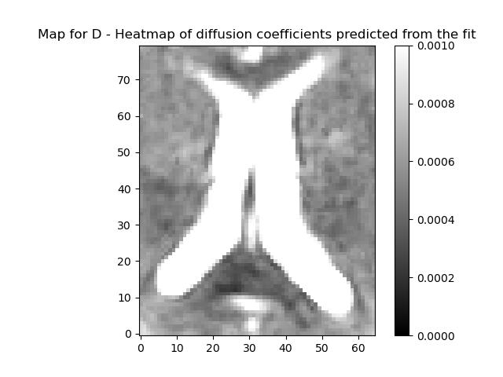

Note
Go to the end to download the full example code
Intravoxel incoherent motion#
The intravoxel incoherent motion (IVIM) model describes diffusion and perfusion in the signal acquired with a diffusion MRI sequence that contains multiple low b-values. The IVIM model can be understood as an adaptation of the work of Stejskal and Tanner [Stejskal65] in biological tissue, and was proposed by Le Bihan [LeBihan84]. The model assumes two compartments: a slow moving compartment, where particles diffuse in a Brownian fashion as a consequence of thermal energy, and a fast moving compartment (the vascular compartment), where blood moves as a consequence of a pressure gradient. In the first compartment, the diffusion coefficient is \(\mathbf{D}\) while in the second compartment, a pseudo diffusion term \(\mathbf{D^*}\) is introduced that describes the displacement of the blood elements in an assumed randomly laid out vascular network, at the macroscopic level. According to [LeBihan84], \(\mathbf{D^*}\) is greater than \(\mathbf{D}\).
The IVIM model expresses the MRI signal as follows:
\[S(b)=S_0(fe^{-bD^*}+(1-f)e^{-bD})\]
where \(\mathbf{b}\) is the diffusion gradient weighing value (which is dependent on the measurement parameters), \(\mathbf{S_{0}}\) is the signal in the absence of diffusion gradient sensitization, \(\mathbf{f}\) is the perfusion fraction, \(\mathbf{D}\) is the diffusion coefficient and \(\mathbf{D^*}\) is the pseudo-diffusion constant, due to vascular contributions.
In the following example we show how to fit the IVIM model on a diffusion-weighted dataset and visualize the diffusion and pseudo-diffusion coefficients. First, we import all relevant modules:
import matplotlib.pyplot as plt
from dipy.reconst.ivim import IvimModel
from dipy.core.gradients import gradient_table
from dipy.data import get_fnames
from dipy.io.gradients import read_bvals_bvecs
from dipy.io.image import load_nifti_data
We get an IVIM dataset using DIPYs data fetcher read_ivim.
This dataset was acquired with 21 b-values in 3 different directions.
Volumes corresponding to different directions were registered to each
other, and averaged across directions. Thus, this dataset has 4 dimensions,
with the length of the last dimension corresponding to the number
of b-values. In order to use this model the data should contain signals
measured at 0 bvalue.
The gtab contains a GradientTable object (information about the gradients
e.g. b-values and b-vectors). We get the data from the file using
load_nifti_data.
data = load_nifti_data(fraw)
bvals, bvecs = read_bvals_bvecs(fbval, fbvec)
gtab = gradient_table(bvals, bvecs, b0_threshold=0)
print('data.shape (%d, %d, %d, %d)' % data.shape)
data.shape (256, 256, 54, 21)
The data has 54 slices, with 256-by-256 voxels in each slice. The fourth dimension corresponds to the b-values in the gtab. Let us visualize the data by taking a slice midway(z=33) at \(\mathbf{b} = 0\).

Heat map of a slice of data
The region around the intersection of the cross-hairs in the figure contains cerebral spinal fluid (CSF), so it should have a very high \(\mathbf{f}\) and \(\mathbf{D^*}\), the area just medial to that is white matter so that should be lower, and the region more laterally contains a mixture of gray matter and CSF. That should give us some contrast to see the values varying across the regions.
Heat map of the CSF slice selected.
Now that we have prepared the datasets we can go forward with
the ivim fit. We provide two methods of fitting the parameters of the IVIM
multi-exponential model explained above. We first fit the model with a simple
fitting approach by passing the option fit_method=trr. This method uses
a two-stage approach: first, a linear fit used to get quick initial guesses
for the parameters \(\mathbf{S_{0}}\) and \(\mathbf{D}\) by considering b-values
greater than split_b_D (default: 400))and assuming a mono-exponential
signal. This is based on the assumption that at high b-values the signal can
be approximated as a mono exponential decay and by taking the logarithm of
the signal values a linear fit can be obtained. Another linear fit for S0
(bvals < split_b_S0 (default: 200)) follows and f is estimated using
\(1 - S0_{prime}/S0\). Then a non-linear least-squares fitting is performed to
fit D_star and f. If the two_stage flag is set to True while
initializing the model, a final non-linear least squares fitting is performed
for all the parameters. All initializations for the model such as
split_b_D are passed while creating the IvimModel. If you are
using Scipy 0.17, you can also set bounds by setting
bounds=([0., 0., 0.,0.], [np.inf, 1., 1., 1.])) while initializing the
IvimModel.
For brevity, we focus on a small section of the slice as selected above, to fit the IVIM model. First, we instantiate the IvimModel object.
ivimmodel = IvimModel(gtab, fit_method='trr')
/Users/skoudoro/devel/dipy-release/dipy/reconst/ivim.py:151: UserWarning: Bounds for this fit have been set from experiments and literature survey. To change the bounds, please input your bounds in model definition...
warnings.warn(bounds_warning, UserWarning)
To fit the model, call the fit method and pass the data for fitting.
ivimfit = ivimmodel.fit(data_slice)
0%| | 0/5200 [00:00<?, ?it/s]
0%| | 22/5200 [00:00<00:23, 216.04it/s]
1%| | 46/5200 [00:00<00:23, 219.69it/s]
1%| | 69/5200 [00:00<00:23, 222.39it/s]/Users/skoudoro/devel/dipy-release/dipy/reconst/ivim.py:434: UserWarning: x0 obtained from linear fitting is not feasible as initial guess for leastsq while estimating f and D_star. Using parameters from the linear fit.
warnings.warn(warningMsg, UserWarning)
/Users/skoudoro/devel/dipy-release/dipy/reconst/ivim.py:507: UserWarning: x0 is unfeasible for leastsq fitting. Returning x0 values from the linear fit.
warnings.warn(warningMsg, UserWarning)
/Users/skoudoro/devel/dipy-release/dipy/reconst/ivim.py:344: UserWarning: Bounds are violated for leastsq fitting. Returning parameters from linear fit
warnings.warn(warningMsg, UserWarning)
2%| | 92/5200 [00:00<00:23, 222.00it/s]
2%| | 117/5200 [00:00<00:22, 230.49it/s]
3%| | 141/5200 [00:00<00:21, 231.13it/s]
3%| | 165/5200 [00:00<00:22, 223.79it/s]
4%| | 188/5200 [00:00<00:23, 217.38it/s]
4%| | 211/5200 [00:00<00:22, 218.96it/s]
4%| | 234/5200 [00:01<00:22, 216.44it/s]
5%| | 256/5200 [00:01<00:23, 214.21it/s]
5%| | 278/5200 [00:01<00:23, 209.29it/s]
6%| | 301/5200 [00:01<00:23, 212.68it/s]
6%| | 323/5200 [00:01<00:22, 214.10it/s]
7%| | 349/5200 [00:01<00:21, 227.01it/s]
7%| | 373/5200 [00:01<00:21, 229.66it/s]
8%| | 398/5200 [00:01<00:20, 235.51it/s]
8%| | 423/5200 [00:01<00:20, 236.52it/s]
9%| | 450/5200 [00:01<00:19, 243.41it/s]
9%| | 475/5200 [00:02<00:20, 235.34it/s]
10%| | 506/5200 [00:02<00:18, 254.47it/s]
10%| | 532/5200 [00:02<00:18, 250.55it/s]
11%| | 558/5200 [00:02<00:19, 237.67it/s]
11%| | 590/5200 [00:02<00:17, 260.18it/s]
12%| | 617/5200 [00:02<00:17, 256.34it/s]
12%| | 643/5200 [00:02<00:18, 242.42it/s]
13%| | 678/5200 [00:02<00:16, 269.67it/s]
14%| | 706/5200 [00:03<00:17, 254.47it/s]
14%| | 732/5200 [00:03<00:17, 248.95it/s]
15%| | 763/5200 [00:03<00:16, 264.25it/s]
15%| | 790/5200 [00:03<00:17, 250.74it/s]
16%| | 817/5200 [00:03<00:17, 255.49it/s]
16%| | 843/5200 [00:03<00:17, 254.20it/s]
17%| | 869/5200 [00:03<00:17, 244.15it/s]
17%| | 899/5200 [00:03<00:16, 256.68it/s]
18%| | 928/5200 [00:03<00:16, 265.21it/s]
18%| | 955/5200 [00:03<00:17, 248.66it/s]
19%| | 994/5200 [00:04<00:14, 284.49it/s]
20%| | 1023/5200 [00:04<00:15, 268.79it/s]
20%| | 1051/5200 [00:04<00:16, 253.58it/s]
21%| | 1091/5200 [00:04<00:14, 291.03it/s]
22%| | 1121/5200 [00:04<00:16, 250.54it/s]
22%| | 1156/5200 [00:04<00:14, 274.59it/s]
23%| | 1185/5200 [00:04<00:15, 258.89it/s]
23%| | 1212/5200 [00:04<00:16, 245.50it/s]
24%| | 1245/5200 [00:05<00:14, 265.65it/s]
24%| | 1273/5200 [00:05<00:16, 245.00it/s]
25%| | 1301/5200 [00:05<00:15, 253.52it/s]
26%| | 1336/5200 [00:05<00:13, 278.38it/s]
26%| | 1365/5200 [00:05<00:15, 247.20it/s]
27%| | 1405/5200 [00:05<00:13, 286.00it/s]
28%| | 1435/5200 [00:05<00:13, 288.13it/s]
28%| | 1465/5200 [00:05<00:13, 284.93it/s]
29%| | 1502/5200 [00:05<00:12, 302.18it/s]
29%| | 1533/5200 [00:06<00:12, 293.49it/s]
30%| | 1580/5200 [00:06<00:10, 339.33it/s]
31%| | 1615/5200 [00:06<00:11, 308.01it/s]
32%| | 1662/5200 [00:06<00:10, 350.34it/s]
33%| | 1699/5200 [00:06<00:11, 314.12it/s]
34%| | 1760/5200 [00:06<00:08, 388.89it/s]
35%| | 1833/5200 [00:06<00:07, 478.30it/s]
36%| | 1884/5200 [00:06<00:07, 439.69it/s]
37%| | 1931/5200 [00:07<00:07, 412.78it/s]
38%| | 1975/5200 [00:07<00:07, 413.10it/s]
39%| | 2018/5200 [00:07<00:08, 365.81it/s]
40%| | 2080/5200 [00:07<00:07, 426.98it/s]
41%| | 2125/5200 [00:07<00:07, 411.31it/s]
42%| | 2168/5200 [00:07<00:07, 393.11it/s]
43%| | 2230/5200 [00:07<00:06, 448.27it/s]
44%| | 2277/5200 [00:07<00:08, 362.00it/s]
45%| | 2322/5200 [00:08<00:07, 382.13it/s]
45%| | 2364/5200 [00:08<00:07, 360.00it/s]
46%| | 2416/5200 [00:08<00:07, 397.04it/s]
47%| | 2468/5200 [00:08<00:06, 427.96it/s]
48%| | 2513/5200 [00:08<00:06, 407.85it/s]
49%| | 2572/5200 [00:08<00:05, 455.16it/s]
51%| | 2627/5200 [00:08<00:05, 476.76it/s]
51%| | 2676/5200 [00:08<00:06, 410.67it/s]
52%| | 2726/5200 [00:08<00:05, 431.66it/s]
53%| | 2775/5200 [00:09<00:05, 443.80it/s]
54%| | 2821/5200 [00:09<00:06, 382.75it/s]
56%| | 2886/5200 [00:09<00:05, 444.28it/s]
57%| | 2953/5200 [00:09<00:04, 502.64it/s]
58%| | 3006/5200 [00:09<00:04, 469.40it/s]
59%| | 3056/5200 [00:09<00:04, 454.31it/s]
60%| | 3121/5200 [00:09<00:04, 503.00it/s]
61%| | 3173/5200 [00:09<00:04, 496.99it/s]
62%| | 3224/5200 [00:10<00:04, 476.43it/s]
63%| | 3289/5200 [00:10<00:03, 523.70it/s]
65%| | 3361/5200 [00:10<00:03, 575.68it/s]
66%| | 3433/5200 [00:10<00:02, 609.37it/s]
67%| | 3495/5200 [00:10<00:03, 525.27it/s]
68%| | 3551/5200 [00:10<00:03, 475.03it/s]
69%| | 3601/5200 [00:10<00:03, 413.15it/s]
70%| | 3645/5200 [00:10<00:03, 406.73it/s]
71%| | 3688/5200 [00:11<00:04, 362.47it/s]
72%| | 3726/5200 [00:11<00:04, 363.83it/s]
72%| | 3764/5200 [00:11<00:04, 333.57it/s]
73%| | 3801/5200 [00:11<00:04, 341.21it/s]
74%| | 3837/5200 [00:11<00:04, 299.08it/s]
75%| | 3879/5200 [00:11<00:04, 325.22it/s]
75%| | 3913/5200 [00:11<00:04, 289.52it/s]
76%| | 3955/5200 [00:11<00:03, 319.53it/s]
77%| | 3989/5200 [00:12<00:04, 275.26it/s]
78%| | 4032/5200 [00:12<00:03, 309.74it/s]
78%| | 4066/5200 [00:12<00:04, 271.94it/s]
79%| | 4096/5200 [00:12<00:04, 274.49it/s]
79%| | 4126/5200 [00:12<00:03, 271.72it/s]
80%| | 4155/5200 [00:12<00:04, 252.63it/s]
80%| | 4182/5200 [00:12<00:04, 215.73it/s]
81%| | 4205/5200 [00:13<00:04, 211.43it/s]
81%| | 4228/5200 [00:13<00:04, 214.61it/s]
82%| | 4262/5200 [00:13<00:03, 246.21it/s]
82%| | 4288/5200 [00:13<00:03, 247.30it/s]
83%| | 4314/5200 [00:13<00:03, 238.16it/s]
84%| | 4344/5200 [00:13<00:03, 254.07it/s]
84%| | 4370/5200 [00:13<00:03, 247.16it/s]
85%| | 4396/5200 [00:13<00:03, 237.24it/s]
85%| | 4426/5200 [00:13<00:03, 253.78it/s]
86%| | 4452/5200 [00:14<00:03, 209.08it/s]
86%| | 4475/5200 [00:14<00:03, 213.36it/s]
87%| | 4511/5200 [00:14<00:02, 249.03it/s]
87%| | 4538/5200 [00:14<00:02, 244.59it/s]
88%| | 4564/5200 [00:14<00:02, 244.03it/s]
88%| | 4599/5200 [00:14<00:02, 270.61it/s]
89%| | 4627/5200 [00:14<00:02, 257.97it/s]
90%| | 4654/5200 [00:14<00:02, 256.25it/s]
90%| | 4680/5200 [00:14<00:02, 248.03it/s]
90%| | 4706/5200 [00:15<00:02, 242.94it/s]
91%| | 4731/5200 [00:15<00:01, 237.11it/s]
91%|| 4755/5200 [00:15<00:01, 226.74it/s]
92%|| 4778/5200 [00:15<00:01, 220.11it/s]
92%|| 4801/5200 [00:15<00:01, 221.23it/s]
93%|| 4826/5200 [00:15<00:01, 227.36it/s]
93%|| 4850/5200 [00:15<00:01, 228.43it/s]
94%|| 4877/5200 [00:15<00:01, 240.22it/s]
94%|| 4902/5200 [00:15<00:01, 242.43it/s]
95%|| 4929/5200 [00:16<00:01, 248.87it/s]
95%|| 4954/5200 [00:16<00:01, 245.07it/s]
96%|| 4979/5200 [00:16<00:00, 236.27it/s]
96%|| 5003/5200 [00:16<00:00, 236.96it/s]
97%|| 5027/5200 [00:16<00:00, 235.65it/s]
97%|| 5051/5200 [00:16<00:00, 231.09it/s]
98%|| 5075/5200 [00:16<00:00, 232.84it/s]
98%|| 5099/5200 [00:16<00:00, 230.56it/s]
99%|| 5123/5200 [00:16<00:00, 225.35it/s]
99%|| 5146/5200 [00:16<00:00, 226.05it/s]
99%|| 5169/5200 [00:17<00:00, 226.77it/s]
100%|| 5192/5200 [00:17<00:00, 226.33it/s]
100%|| 5200/5200 [00:17<00:00, 302.05it/s]
The fit method creates a IvimFit object which contains the parameters of the model obtained after fitting. These are accessible through the model_params attribute of the IvimFit object. The parameters are arranged as a 4D array, corresponding to the spatial dimensions of the data, and the last dimension (of length 4) corresponding to the model parameters according to the following order : \(\mathbf{S_{0}, f, D^*, D}\).
ivimparams = ivimfit.model_params
print("ivimparams.shape : {}".format(ivimparams.shape))
ivimparams.shape : (65, 80, 4)
As we see, we have a 20x20 slice at the height z = 33. Thus we have 400 voxels. We will now plot the parameters obtained from the fit for a voxel and also various maps for the entire slice. This will give us an idea about the diffusion and perfusion in that section. Let(i, j) denote the coordinate of the voxel. We have already fixed the z component as 33 and hence we will get a slice which is 33 units above.
[3.97863113e+03 2.00000000e-01 1.69394190e-03 6.71052294e-04]
Now we can map the perfusion and diffusion maps for the slice. We
will plot a heatmap showing the values using a colormap. It will be
useful to define a plotting function for the heatmap here since we
will use it to plot for all the IVIM parameters. We will need to specify
the lower and upper limits for our data. For example, the perfusion
fractions should be in the range (0,1). Similarly, the diffusion and
pseudo-diffusion constants are much smaller than 1. We pass an argument
called variable to out plotting function which gives the label for
the plot.
def plot_map(raw_data, variable, limits, filename):
fig, ax = plt.subplots(1)
lower, upper = limits
ax.set_title('Map for {}'.format(variable))
im = ax.imshow(raw_data.T, origin='lower', clim=(lower, upper),
cmap="gray", interpolation='nearest')
fig.colorbar(im)
fig.savefig(filename)
Let us get the various plots with fit_method = trr so that we can visualize them in one page
plot_map(ivimfit.S0_predicted, "Predicted S0", (0, 10000), "predicted_S0.png")
plot_map(data_slice[:, :, 0], "Measured S0", (0, 10000), "measured_S0.png")
plot_map(ivimfit.perfusion_fraction, "f", (0, 1), "perfusion_fraction.png")
plot_map(ivimfit.D_star, "D*", (0, 0.01), "perfusion_coeff.png")
plot_map(ivimfit.D, "D", (0, 0.001), "diffusion_coeff.png")


Next, we will fit the same model with a more refined optimization process with fit_method=VarPro (for Variable Projection). The VarPro computes the IVIM parameters using the MIX approach [Farooq16]. This algorithm uses three different optimizers. It starts with a differential evolution algorithm and fits the parameters in the power of exponentials. Then the fitted parameters in the first step are utilized to make a linear convex problem. Using a convex optimization, the volume fractions are determined. The last step is non-linear least-squares fitting on all the parameters. The results of the first and second optimizers are utilized as the initial values for the last step of the algorithm.
As opposed to the trr fitting method, this approach does not need to set any thresholds on the bvals to differentiate between the perfusion (pseudo-diffusion) and diffusion portions and fits the parameters simultaneously. Making use of the three step optimization mentioned above increases the convergence basin for fitting the multi-exponential functions of microstructure models. This method has been described in further detail in [Fadnavis19] and [Farooq16].
ivimmodel_vp = IvimModel(gtab, fit_method='VarPro')
ivimfit_vp = ivimmodel_vp.fit(data_slice)
/Users/skoudoro/devel/dipy-release/dipy/reconst/ivim.py:157: UserWarning: Bounds for this fit have been set from experiments and literature survey. To change the bounds, please input your bounds in model definition...
warnings.warn(bounds_warning, UserWarning)
0%| | 0/5200 [00:00<?, ?it/s]
0%| | 3/5200 [00:00<04:22, 19.81it/s]
0%| | 5/5200 [00:00<04:30, 19.19it/s]
0%| | 7/5200 [00:00<04:36, 18.79it/s]
0%| | 9/5200 [00:00<04:46, 18.11it/s]
0%| | 11/5200 [00:00<04:41, 18.46it/s]
0%| | 14/5200 [00:00<04:00, 21.60it/s]
0%| | 17/5200 [00:00<04:13, 20.48it/s]
0%| | 20/5200 [00:01<04:20, 19.90it/s]
0%| | 23/5200 [00:01<04:23, 19.62it/s]
0%| | 25/5200 [00:01<04:30, 19.17it/s]
1%| | 27/5200 [00:01<04:34, 18.81it/s]
1%| | 29/5200 [00:01<04:37, 18.62it/s]
1%| | 31/5200 [00:01<04:34, 18.80it/s]
1%| | 33/5200 [00:01<04:33, 18.92it/s]
1%| | 35/5200 [00:01<04:33, 18.87it/s]
1%| | 38/5200 [00:01<04:16, 20.13it/s]
1%| | 41/5200 [00:02<04:09, 20.69it/s]
1%| | 44/5200 [00:02<04:19, 19.89it/s]
1%| | 46/5200 [00:02<04:22, 19.66it/s]
1%| | 48/5200 [00:02<04:26, 19.32it/s]
1%| | 51/5200 [00:02<03:57, 21.65it/s]
1%| | 54/5200 [00:02<04:11, 20.42it/s]
1%| | 57/5200 [00:02<04:20, 19.73it/s]
1%| | 60/5200 [00:03<04:24, 19.41it/s]
1%| | 63/5200 [00:03<03:56, 21.69it/s]
1%| | 66/5200 [00:03<03:55, 21.81it/s]
1%| | 69/5200 [00:03<03:47, 22.51it/s]
1%| | 72/5200 [00:03<04:00, 21.33it/s]
1%| | 75/5200 [00:03<04:03, 21.01it/s]
2%| | 78/5200 [00:03<04:15, 20.03it/s]
2%| | 81/5200 [00:04<04:20, 19.65it/s]
2%| | 85/5200 [00:04<03:50, 22.16it/s]
2%| | 88/5200 [00:04<04:02, 21.08it/s]
2%| | 91/5200 [00:04<03:56, 21.64it/s]
2%| | 94/5200 [00:04<04:03, 20.99it/s]
2%| | 97/5200 [00:04<03:59, 21.33it/s]
2%| | 100/5200 [00:04<03:53, 21.81it/s]
2%| | 103/5200 [00:05<04:01, 21.09it/s]
2%| | 106/5200 [00:05<03:52, 21.90it/s]
2%| | 109/5200 [00:05<03:50, 22.04it/s]
2%| | 112/5200 [00:05<04:04, 20.80it/s]
2%| | 115/5200 [00:05<04:14, 19.99it/s]
2%| | 118/5200 [00:05<04:15, 19.89it/s]
2%| | 121/5200 [00:05<04:11, 20.17it/s]
2%| | 124/5200 [00:06<04:11, 20.22it/s]
2%| | 127/5200 [00:06<04:19, 19.59it/s]
2%| | 129/5200 [00:06<04:28, 18.86it/s]
3%| | 131/5200 [00:06<04:36, 18.32it/s]
3%| | 134/5200 [00:06<04:10, 20.19it/s]
3%| | 137/5200 [00:06<04:07, 20.42it/s]
3%| | 140/5200 [00:06<04:01, 20.96it/s]
3%| | 143/5200 [00:07<04:12, 20.05it/s]
3%| | 146/5200 [00:07<04:18, 19.58it/s]
3%| | 148/5200 [00:07<04:21, 19.30it/s]
3%| | 151/5200 [00:07<03:55, 21.40it/s]
3%| | 154/5200 [00:07<03:57, 21.23it/s]
3%| | 157/5200 [00:07<03:50, 21.90it/s]
3%| | 160/5200 [00:07<03:53, 21.54it/s]
3%| | 163/5200 [00:08<04:02, 20.76it/s]
3%| | 166/5200 [00:08<04:01, 20.82it/s]
3%| | 169/5200 [00:08<04:10, 20.12it/s]
3%| | 172/5200 [00:08<03:54, 21.46it/s]
3%| | 175/5200 [00:08<03:42, 22.54it/s]
3%| | 178/5200 [00:08<03:40, 22.75it/s]
3%| | 181/5200 [00:08<03:43, 22.42it/s]
4%| | 184/5200 [00:08<03:50, 21.74it/s]
4%| | 187/5200 [00:09<03:59, 20.90it/s]
4%| | 190/5200 [00:09<04:09, 20.11it/s]
4%| | 193/5200 [00:09<04:14, 19.65it/s]
4%| | 195/5200 [00:09<04:19, 19.29it/s]
4%| | 198/5200 [00:09<03:54, 21.37it/s]
4%| | 201/5200 [00:09<03:56, 21.13it/s]
4%| | 204/5200 [00:09<03:53, 21.40it/s]
4%| | 207/5200 [00:10<04:00, 20.75it/s]
4%| | 210/5200 [00:10<04:09, 19.97it/s]
4%| | 213/5200 [00:10<04:17, 19.39it/s]
4%| | 216/5200 [00:10<04:02, 20.57it/s]
4%| | 219/5200 [00:10<04:10, 19.89it/s]
4%| | 222/5200 [00:10<04:13, 19.63it/s]
4%| | 224/5200 [00:10<04:17, 19.34it/s]
4%| | 226/5200 [00:11<04:17, 19.29it/s]
4%| | 228/5200 [00:11<04:22, 18.98it/s]
4%| | 230/5200 [00:11<04:27, 18.56it/s]
4%| | 233/5200 [00:11<04:17, 19.28it/s]
5%| | 235/5200 [00:11<04:19, 19.14it/s]
5%| | 238/5200 [00:11<03:57, 20.88it/s]
5%| | 241/5200 [00:11<04:01, 20.52it/s]
5%| | 244/5200 [00:11<04:03, 20.35it/s]
5%| | 247/5200 [00:12<03:56, 20.92it/s]
5%| | 250/5200 [00:12<04:04, 20.22it/s]
5%| | 253/5200 [00:12<04:08, 19.92it/s]
5%| | 256/5200 [00:12<04:10, 19.73it/s]
5%| | 259/5200 [00:12<04:08, 19.87it/s]
5%| | 262/5200 [00:12<03:59, 20.59it/s]
5%| | 265/5200 [00:13<04:03, 20.28it/s]
5%| | 268/5200 [00:13<03:54, 21.03it/s]
5%| | 271/5200 [00:13<04:04, 20.14it/s]
5%| | 274/5200 [00:13<04:09, 19.72it/s]
5%| | 277/5200 [00:13<03:51, 21.30it/s]
5%| | 280/5200 [00:13<03:50, 21.30it/s]
5%| | 283/5200 [00:13<03:59, 20.49it/s]
6%| | 286/5200 [00:14<04:03, 20.16it/s]
6%| | 289/5200 [00:14<04:10, 19.63it/s]
6%| | 291/5200 [00:14<04:14, 19.28it/s]
6%| | 293/5200 [00:14<04:17, 19.07it/s]
6%| | 296/5200 [00:14<04:01, 20.34it/s]
6%| | 299/5200 [00:14<03:49, 21.32it/s]
6%| | 302/5200 [00:14<03:58, 20.52it/s]
6%| | 305/5200 [00:14<04:07, 19.81it/s]
6%| | 307/5200 [00:15<04:12, 19.40it/s]
6%| | 309/5200 [00:15<04:15, 19.16it/s]
6%| | 311/5200 [00:15<04:18, 18.90it/s]
6%| | 314/5200 [00:15<04:01, 20.24it/s]
6%| | 317/5200 [00:15<04:02, 20.10it/s]
6%| | 320/5200 [00:15<04:02, 20.16it/s]
6%| | 323/5200 [00:15<03:54, 20.82it/s]
6%| | 326/5200 [00:16<03:41, 21.99it/s]
6%| | 329/5200 [00:16<03:54, 20.81it/s]
6%| | 332/5200 [00:16<03:57, 20.49it/s]
6%| | 335/5200 [00:16<04:02, 20.06it/s]
6%| | 338/5200 [00:16<03:59, 20.33it/s]
7%| | 341/5200 [00:16<03:52, 20.89it/s]
7%| | 344/5200 [00:16<04:01, 20.08it/s]
7%| | 347/5200 [00:17<04:14, 19.10it/s]
7%| | 349/5200 [00:17<04:20, 18.63it/s]
7%| | 351/5200 [00:17<04:26, 18.21it/s]
7%| | 354/5200 [00:17<04:07, 19.57it/s]
7%| | 358/5200 [00:17<03:32, 22.75it/s]
7%| | 361/5200 [00:17<03:21, 23.96it/s]
7%| | 364/5200 [00:17<03:26, 23.47it/s]
7%| | 367/5200 [00:17<03:42, 21.76it/s]
7%| | 370/5200 [00:18<03:41, 21.80it/s]
7%| | 373/5200 [00:18<03:38, 22.06it/s]
7%| | 376/5200 [00:18<03:30, 22.94it/s]
7%| | 379/5200 [00:18<03:30, 22.91it/s]
7%| | 383/5200 [00:18<03:16, 24.56it/s]
7%| | 386/5200 [00:18<03:33, 22.56it/s]
7%| | 389/5200 [00:18<03:46, 21.26it/s]
8%| | 392/5200 [00:19<03:38, 22.00it/s]
8%| | 395/5200 [00:19<03:30, 22.84it/s]
8%| | 398/5200 [00:19<03:44, 21.36it/s]
8%| | 401/5200 [00:19<03:52, 20.67it/s]
8%| | 404/5200 [00:19<03:47, 21.06it/s]
8%| | 407/5200 [00:19<03:35, 22.29it/s]
8%| | 410/5200 [00:19<03:44, 21.37it/s]
8%| | 413/5200 [00:20<03:52, 20.59it/s]
8%| | 416/5200 [00:20<04:00, 19.91it/s]
8%| | 419/5200 [00:20<04:07, 19.33it/s]
8%| | 423/5200 [00:20<03:38, 21.89it/s]
8%| | 426/5200 [00:20<03:35, 22.20it/s]
8%| | 429/5200 [00:20<03:33, 22.35it/s]
8%| | 432/5200 [00:20<03:33, 22.38it/s]
8%| | 436/5200 [00:21<03:11, 24.87it/s]
8%| | 439/5200 [00:21<03:04, 25.82it/s]
8%| | 442/5200 [00:21<03:12, 24.77it/s]
9%| | 445/5200 [00:21<03:28, 22.86it/s]
9%| | 448/5200 [00:21<03:28, 22.74it/s]
9%| | 451/5200 [00:21<03:30, 22.60it/s]
9%| | 454/5200 [00:21<03:25, 23.05it/s]
9%| | 457/5200 [00:22<03:34, 22.08it/s]
9%| | 460/5200 [00:22<03:30, 22.57it/s]
9%| | 463/5200 [00:22<03:47, 20.80it/s]
9%| | 466/5200 [00:22<04:02, 19.49it/s]
9%| | 468/5200 [00:22<04:05, 19.31it/s]
9%| | 471/5200 [00:22<03:50, 20.52it/s]
9%| | 474/5200 [00:22<03:56, 19.98it/s]
9%| | 477/5200 [00:23<03:46, 20.87it/s]
9%| | 480/5200 [00:23<03:41, 21.30it/s]
9%| | 483/5200 [00:23<03:50, 20.44it/s]
9%| | 486/5200 [00:23<03:43, 21.06it/s]
9%| | 489/5200 [00:23<03:43, 21.12it/s]
9%| | 492/5200 [00:23<03:49, 20.53it/s]
10%| | 495/5200 [00:23<03:33, 22.09it/s]
10%| | 498/5200 [00:24<03:47, 20.64it/s]
10%| | 501/5200 [00:24<03:41, 21.24it/s]
10%| | 504/5200 [00:24<03:30, 22.28it/s]
10%| | 507/5200 [00:24<03:41, 21.21it/s]
10%| | 510/5200 [00:24<03:23, 23.02it/s]
10%| | 513/5200 [00:24<03:18, 23.63it/s]
10%| | 516/5200 [00:24<03:09, 24.74it/s]
10%| | 519/5200 [00:24<03:15, 23.89it/s]
10%| | 522/5200 [00:25<03:31, 22.10it/s]
10%| | 525/5200 [00:25<03:37, 21.45it/s]
10%| | 529/5200 [00:25<03:02, 25.57it/s]
10%| | 532/5200 [00:25<03:09, 24.60it/s]
10%| | 535/5200 [00:25<03:09, 24.60it/s]
10%| | 538/5200 [00:25<03:22, 23.00it/s]
10%| | 541/5200 [00:25<03:33, 21.86it/s]
10%| | 544/5200 [00:26<03:27, 22.41it/s]
11%| | 547/5200 [00:26<03:40, 21.11it/s]
11%| | 550/5200 [00:26<03:45, 20.61it/s]
11%| | 553/5200 [00:26<03:46, 20.51it/s]
11%| | 556/5200 [00:26<03:41, 20.95it/s]
11%| | 559/5200 [00:26<03:47, 20.41it/s]
11%| | 562/5200 [00:26<03:40, 21.06it/s]
11%| | 565/5200 [00:27<03:49, 20.16it/s]
11%| | 568/5200 [00:27<03:53, 19.85it/s]
11%| | 571/5200 [00:27<03:54, 19.75it/s]
11%| | 573/5200 [00:27<04:00, 19.27it/s]
11%| | 575/5200 [00:27<04:06, 18.74it/s]
11%| | 577/5200 [00:27<04:13, 18.23it/s]
11%| | 580/5200 [00:27<03:48, 20.23it/s]
11%| | 583/5200 [00:27<03:54, 19.69it/s]
11%| | 586/5200 [00:28<03:51, 19.91it/s]
11%| | 589/5200 [00:28<03:54, 19.70it/s]
11%| | 591/5200 [00:28<03:55, 19.58it/s]
11%| | 594/5200 [00:28<03:33, 21.58it/s]
11%| | 597/5200 [00:28<03:18, 23.24it/s]
12%| | 600/5200 [00:28<03:35, 21.39it/s]
12%| | 603/5200 [00:28<03:41, 20.73it/s]
12%| | 606/5200 [00:29<03:37, 21.17it/s]
12%| | 609/5200 [00:29<03:33, 21.55it/s]
12%| | 612/5200 [00:29<03:44, 20.41it/s]
12%| | 615/5200 [00:29<03:29, 21.89it/s]
12%| | 618/5200 [00:29<03:39, 20.85it/s]
12%| | 621/5200 [00:29<03:44, 20.36it/s]
12%| | 624/5200 [00:29<03:31, 21.68it/s]
12%| | 627/5200 [00:30<03:33, 21.38it/s]
12%| | 630/5200 [00:30<03:39, 20.80it/s]
12%| | 633/5200 [00:30<03:42, 20.51it/s]
12%| | 637/5200 [00:30<03:10, 23.91it/s]
12%| | 640/5200 [00:30<03:12, 23.71it/s]
12%| | 643/5200 [00:30<03:27, 21.97it/s]
12%| | 646/5200 [00:30<03:36, 21.00it/s]
12%| | 649/5200 [00:31<03:42, 20.47it/s]
13%| | 652/5200 [00:31<03:35, 21.14it/s]
13%| | 655/5200 [00:31<03:45, 20.12it/s]
13%| | 658/5200 [00:31<03:55, 19.29it/s]
13%| | 662/5200 [00:31<03:28, 21.72it/s]
13%| | 665/5200 [00:31<03:18, 22.90it/s]
13%| | 668/5200 [00:31<03:23, 22.28it/s]
13%| | 671/5200 [00:32<03:25, 22.01it/s]
13%| | 675/5200 [00:32<03:02, 24.86it/s]
13%| | 678/5200 [00:32<03:19, 22.68it/s]
13%| | 682/5200 [00:32<03:09, 23.88it/s]
13%| | 685/5200 [00:32<03:02, 24.70it/s]
13%| | 688/5200 [00:32<03:15, 23.04it/s]
13%| | 691/5200 [00:32<03:16, 22.99it/s]
13%| | 694/5200 [00:33<03:22, 22.20it/s]
13%| | 697/5200 [00:33<03:36, 20.78it/s]
13%| | 700/5200 [00:33<03:28, 21.62it/s]
14%| | 703/5200 [00:33<03:31, 21.28it/s]
14%| | 706/5200 [00:33<03:42, 20.15it/s]
14%| | 709/5200 [00:33<03:41, 20.29it/s]
14%| | 712/5200 [00:33<03:43, 20.07it/s]
14%| | 715/5200 [00:34<03:42, 20.13it/s]
14%| | 718/5200 [00:34<03:44, 19.94it/s]
14%| | 721/5200 [00:34<03:48, 19.58it/s]
14%| | 723/5200 [00:34<03:51, 19.33it/s]
14%| | 725/5200 [00:34<03:50, 19.40it/s]
14%| | 729/5200 [00:34<03:09, 23.64it/s]
14%| | 732/5200 [00:34<03:08, 23.68it/s]
14%| | 735/5200 [00:35<03:26, 21.64it/s]
14%| | 738/5200 [00:35<03:37, 20.49it/s]
14%| | 741/5200 [00:35<03:24, 21.77it/s]
14%| | 744/5200 [00:35<03:29, 21.24it/s]
14%| | 747/5200 [00:35<03:26, 21.54it/s]
14%| | 750/5200 [00:35<03:29, 21.20it/s]
14%| | 753/5200 [00:35<03:39, 20.22it/s]
15%| | 756/5200 [00:36<03:31, 21.00it/s]
15%| | 759/5200 [00:36<03:27, 21.45it/s]
15%| | 762/5200 [00:36<03:22, 21.93it/s]
15%| | 765/5200 [00:36<03:18, 22.30it/s]
15%| | 768/5200 [00:36<03:04, 24.07it/s]
15%| | 771/5200 [00:36<03:14, 22.78it/s]
15%| | 774/5200 [00:36<03:08, 23.54it/s]
15%| | 777/5200 [00:36<03:07, 23.55it/s]
15%| | 780/5200 [00:37<03:19, 22.14it/s]
15%| | 783/5200 [00:37<03:28, 21.22it/s]
15%| | 786/5200 [00:37<03:37, 20.28it/s]
15%| | 789/5200 [00:37<03:37, 20.27it/s]
15%| | 792/5200 [00:37<03:40, 20.00it/s]
15%| | 795/5200 [00:37<03:36, 20.36it/s]
15%| | 798/5200 [00:37<03:17, 22.27it/s]
15%| | 801/5200 [00:38<03:29, 20.95it/s]
15%| | 804/5200 [00:38<03:22, 21.70it/s]
16%| | 808/5200 [00:38<03:09, 23.21it/s]
16%| | 811/5200 [00:38<03:06, 23.60it/s]
16%| | 814/5200 [00:38<03:12, 22.79it/s]
16%| | 817/5200 [00:38<03:21, 21.80it/s]
16%| | 820/5200 [00:38<03:25, 21.29it/s]
16%| | 823/5200 [00:39<03:15, 22.43it/s]
16%| | 826/5200 [00:39<03:25, 21.27it/s]
16%| | 829/5200 [00:39<03:25, 21.23it/s]
16%| | 832/5200 [00:39<03:16, 22.21it/s]
16%| | 835/5200 [00:39<03:09, 23.09it/s]
16%| | 838/5200 [00:39<03:13, 22.58it/s]
16%| | 841/5200 [00:39<03:09, 23.02it/s]
16%| | 844/5200 [00:40<03:08, 23.06it/s]
16%| | 847/5200 [00:40<03:10, 22.83it/s]
16%| | 850/5200 [00:40<03:18, 21.94it/s]
16%| | 853/5200 [00:40<03:27, 20.95it/s]
16%| | 856/5200 [00:40<03:21, 21.57it/s]
17%| | 859/5200 [00:40<03:29, 20.68it/s]
17%| | 862/5200 [00:40<03:23, 21.28it/s]
17%| | 865/5200 [00:41<03:19, 21.72it/s]
17%| | 868/5200 [00:41<03:12, 22.49it/s]
17%| | 871/5200 [00:41<03:25, 21.09it/s]
17%| | 874/5200 [00:41<03:29, 20.69it/s]
17%| | 877/5200 [00:41<03:36, 19.95it/s]
17%| | 881/5200 [00:41<03:09, 22.82it/s]
17%| | 884/5200 [00:41<03:15, 22.08it/s]
17%| | 887/5200 [00:42<03:14, 22.23it/s]
17%| | 890/5200 [00:42<03:16, 21.94it/s]
17%| | 893/5200 [00:42<03:12, 22.37it/s]
17%| | 896/5200 [00:42<03:04, 23.31it/s]
17%| | 899/5200 [00:42<03:05, 23.23it/s]
17%| | 902/5200 [00:42<03:21, 21.32it/s]
17%| | 905/5200 [00:42<03:23, 21.14it/s]
17%| | 908/5200 [00:43<03:24, 20.94it/s]
18%| | 911/5200 [00:43<03:20, 21.39it/s]
18%| | 914/5200 [00:43<03:07, 22.80it/s]
18%| | 917/5200 [00:43<03:18, 21.54it/s]
18%| | 921/5200 [00:43<02:48, 25.46it/s]
18%| | 924/5200 [00:43<02:53, 24.62it/s]
18%| | 927/5200 [00:43<02:53, 24.65it/s]
18%| | 930/5200 [00:43<03:11, 22.31it/s]
18%| | 933/5200 [00:44<03:08, 22.64it/s]
18%| | 936/5200 [00:44<03:10, 22.38it/s]
18%| | 939/5200 [00:44<03:14, 21.88it/s]
18%| | 942/5200 [00:44<03:15, 21.82it/s]
18%| | 945/5200 [00:44<03:11, 22.18it/s]
18%| | 948/5200 [00:44<03:19, 21.36it/s]
18%| | 951/5200 [00:44<03:26, 20.57it/s]
18%| | 954/5200 [00:45<03:28, 20.33it/s]
18%| | 957/5200 [00:45<03:36, 19.59it/s]
18%| | 959/5200 [00:45<03:40, 19.27it/s]
18%| | 962/5200 [00:45<03:24, 20.71it/s]
19%| | 965/5200 [00:45<03:27, 20.45it/s]
19%| | 968/5200 [00:45<03:32, 19.94it/s]
19%| | 971/5200 [00:45<03:20, 21.07it/s]
19%| | 974/5200 [00:46<03:07, 22.51it/s]
19%| | 977/5200 [00:46<03:12, 21.91it/s]
19%| | 980/5200 [00:46<03:05, 22.72it/s]
19%| | 983/5200 [00:46<03:20, 21.05it/s]
19%| | 987/5200 [00:46<02:53, 24.32it/s]
19%| | 991/5200 [00:46<02:32, 27.59it/s]
19%| | 994/5200 [00:46<02:30, 27.92it/s]
19%| | 997/5200 [00:46<02:50, 24.69it/s]
19%| | 1000/5200 [00:47<02:50, 24.57it/s]
19%| | 1003/5200 [00:47<03:07, 22.39it/s]
19%| | 1006/5200 [00:47<02:53, 24.12it/s]
19%| | 1009/5200 [00:47<03:04, 22.77it/s]
19%| | 1012/5200 [00:47<03:08, 22.17it/s]
20%| | 1015/5200 [00:47<03:04, 22.65it/s]
20%| | 1018/5200 [00:47<03:15, 21.44it/s]
20%| | 1021/5200 [00:48<03:13, 21.64it/s]
20%| | 1024/5200 [00:48<03:17, 21.17it/s]
20%| | 1027/5200 [00:48<03:23, 20.55it/s]
20%| | 1030/5200 [00:48<03:25, 20.33it/s]
20%| | 1033/5200 [00:48<03:12, 21.67it/s]
20%| | 1036/5200 [00:48<03:19, 20.91it/s]
20%| | 1039/5200 [00:48<03:28, 19.99it/s]
20%| | 1042/5200 [00:49<03:17, 21.02it/s]
20%| | 1045/5200 [00:49<03:19, 20.79it/s]
20%| | 1048/5200 [00:49<03:19, 20.79it/s]
20%| | 1051/5200 [00:49<03:02, 22.78it/s]
20%| | 1054/5200 [00:49<03:14, 21.27it/s]
20%| | 1057/5200 [00:49<03:17, 21.02it/s]
20%| | 1060/5200 [00:49<03:17, 20.97it/s]
20%| | 1063/5200 [00:50<03:12, 21.53it/s]
20%| | 1066/5200 [00:50<03:08, 21.89it/s]
21%| | 1069/5200 [00:50<02:54, 23.71it/s]
21%| | 1072/5200 [00:50<02:54, 23.71it/s]
21%| | 1075/5200 [00:50<02:51, 24.07it/s]
21%| | 1078/5200 [00:50<02:46, 24.81it/s]
21%| | 1081/5200 [00:50<02:38, 25.98it/s]
21%| | 1084/5200 [00:50<02:56, 23.30it/s]
21%| | 1087/5200 [00:51<03:03, 22.41it/s]
21%| | 1090/5200 [00:51<03:12, 21.40it/s]
21%| | 1093/5200 [00:51<03:17, 20.75it/s]
21%| | 1096/5200 [00:51<03:11, 21.44it/s]
21%| | 1099/5200 [00:51<03:07, 21.85it/s]
21%| | 1102/5200 [00:51<02:53, 23.68it/s]
21%| | 1105/5200 [00:51<03:01, 22.59it/s]
21%| | 1108/5200 [00:52<03:10, 21.43it/s]
21%| | 1111/5200 [00:52<03:16, 20.81it/s]
21%| | 1114/5200 [00:52<03:16, 20.81it/s]
21%| | 1117/5200 [00:52<03:22, 20.18it/s]
22%| | 1120/5200 [00:52<03:27, 19.69it/s]
22%| | 1124/5200 [00:52<03:07, 21.77it/s]
22%| | 1127/5200 [00:52<03:14, 20.99it/s]
22%| | 1130/5200 [00:53<02:57, 22.95it/s]
22%| | 1133/5200 [00:53<02:55, 23.22it/s]
22%| | 1136/5200 [00:53<03:09, 21.43it/s]
22%| | 1139/5200 [00:53<03:08, 21.53it/s]
22%| | 1142/5200 [00:53<03:02, 22.20it/s]
22%| | 1146/5200 [00:53<02:50, 23.75it/s]
22%| | 1149/5200 [00:53<02:55, 23.15it/s]
22%| | 1152/5200 [00:54<02:55, 23.07it/s]
22%| | 1155/5200 [00:54<03:00, 22.36it/s]
22%| | 1158/5200 [00:54<02:58, 22.65it/s]
22%| | 1162/5200 [00:54<02:49, 23.76it/s]
22%| | 1165/5200 [00:54<03:03, 21.94it/s]
22%| | 1168/5200 [00:54<02:59, 22.49it/s]
23%| | 1171/5200 [00:54<03:01, 22.16it/s]
23%| | 1174/5200 [00:55<03:05, 21.76it/s]
23%| | 1177/5200 [00:55<02:54, 23.05it/s]
23%| | 1180/5200 [00:55<03:08, 21.27it/s]
23%| | 1183/5200 [00:55<03:06, 21.54it/s]
23%| | 1186/5200 [00:55<03:13, 20.73it/s]
23%| | 1189/5200 [00:55<03:17, 20.29it/s]
23%| | 1192/5200 [00:55<03:19, 20.14it/s]
23%| | 1195/5200 [00:56<03:19, 20.12it/s]
23%| | 1198/5200 [00:56<03:20, 19.96it/s]
23%| | 1201/5200 [00:56<03:26, 19.38it/s]
23%| | 1204/5200 [00:56<03:12, 20.76it/s]
23%| | 1207/5200 [00:56<03:19, 20.04it/s]
23%| | 1210/5200 [00:56<03:24, 19.47it/s]
23%| | 1213/5200 [00:56<03:12, 20.76it/s]
23%| | 1216/5200 [00:57<02:54, 22.80it/s]
23%| | 1219/5200 [00:57<02:59, 22.14it/s]
24%| | 1222/5200 [00:57<02:46, 23.83it/s]
24%| | 1226/5200 [00:57<02:30, 26.45it/s]
24%| | 1230/5200 [00:57<02:15, 29.24it/s]
24%| | 1235/5200 [00:57<02:06, 31.34it/s]
24%| | 1239/5200 [00:57<02:03, 31.96it/s]
24%| | 1243/5200 [00:57<02:21, 27.87it/s]
24%| | 1246/5200 [00:58<02:39, 24.84it/s]
24%| | 1250/5200 [00:58<02:31, 26.14it/s]
24%| | 1253/5200 [00:58<02:46, 23.67it/s]
24%| | 1256/5200 [00:58<02:41, 24.46it/s]
24%| | 1259/5200 [00:58<02:45, 23.76it/s]
24%| | 1262/5200 [00:58<02:49, 23.29it/s]
24%| | 1265/5200 [00:58<02:49, 23.26it/s]
24%| | 1268/5200 [00:59<02:58, 21.97it/s]
24%| | 1271/5200 [00:59<03:07, 20.96it/s]
24%| | 1274/5200 [00:59<02:51, 22.84it/s]
25%| | 1277/5200 [00:59<03:01, 21.61it/s]
25%| | 1280/5200 [00:59<03:05, 21.15it/s]
25%| | 1283/5200 [00:59<03:08, 20.81it/s]
25%| | 1286/5200 [00:59<03:16, 19.96it/s]
25%| | 1289/5200 [01:00<03:20, 19.54it/s]
25%| | 1293/5200 [01:00<02:48, 23.23it/s]
25%| | 1297/5200 [01:00<02:39, 24.48it/s]
25%| | 1300/5200 [01:00<02:37, 24.75it/s]
25%| | 1303/5200 [01:00<02:32, 25.54it/s]
25%| | 1307/5200 [01:00<02:19, 27.99it/s]
25%| | 1311/5200 [01:00<02:09, 30.03it/s]
25%| | 1315/5200 [01:01<02:20, 27.56it/s]
25%| | 1318/5200 [01:01<02:35, 25.01it/s]
25%| | 1321/5200 [01:01<02:31, 25.58it/s]
25%| | 1324/5200 [01:01<02:38, 24.43it/s]
26%| | 1327/5200 [01:01<02:40, 24.15it/s]
26%| | 1330/5200 [01:01<02:35, 24.92it/s]
26%| | 1333/5200 [01:01<02:51, 22.50it/s]
26%| | 1336/5200 [01:01<03:02, 21.16it/s]
26%| | 1339/5200 [01:02<03:10, 20.24it/s]
26%| | 1342/5200 [01:02<03:16, 19.63it/s]
26%| | 1345/5200 [01:02<03:20, 19.26it/s]
26%| | 1347/5200 [01:02<03:20, 19.20it/s]
26%| | 1349/5200 [01:02<03:20, 19.17it/s]
26%| | 1352/5200 [01:02<03:07, 20.52it/s]
26%| | 1356/5200 [01:02<02:50, 22.57it/s]
26%| | 1359/5200 [01:03<03:00, 21.27it/s]
26%| | 1362/5200 [01:03<03:07, 20.45it/s]
26%| | 1365/5200 [01:03<03:12, 19.95it/s]
26%| | 1368/5200 [01:03<03:05, 20.64it/s]
26%| | 1372/5200 [01:03<02:49, 22.61it/s]
26%| | 1375/5200 [01:03<02:43, 23.33it/s]
26%| | 1378/5200 [01:03<02:54, 21.90it/s]
27%| | 1381/5200 [01:04<03:04, 20.67it/s]
27%| | 1384/5200 [01:04<02:55, 21.72it/s]
27%| | 1387/5200 [01:04<02:46, 22.97it/s]
27%| | 1391/5200 [01:04<02:24, 26.29it/s]
27%| | 1394/5200 [01:04<02:23, 26.47it/s]
27%| | 1397/5200 [01:04<02:38, 23.96it/s]
27%| | 1400/5200 [01:04<02:41, 23.49it/s]
27%| | 1403/5200 [01:05<02:33, 24.69it/s]
27%| | 1406/5200 [01:05<02:49, 22.35it/s]
27%| | 1409/5200 [01:05<02:48, 22.54it/s]
27%| | 1412/5200 [01:05<03:04, 20.51it/s]
27%| | 1415/5200 [01:05<03:15, 19.32it/s]
27%| | 1417/5200 [01:05<03:21, 18.74it/s]
27%| | 1419/5200 [01:05<03:27, 18.24it/s]
27%| | 1422/5200 [01:06<03:20, 18.86it/s]
27%| | 1425/5200 [01:06<03:12, 19.63it/s]
27%| | 1428/5200 [01:06<03:11, 19.65it/s]
28%| | 1431/5200 [01:06<02:53, 21.70it/s]
28%| | 1435/5200 [01:06<02:27, 25.47it/s]
28%| | 1438/5200 [01:06<02:42, 23.16it/s]
28%| | 1441/5200 [01:06<02:32, 24.73it/s]
28%| | 1444/5200 [01:06<02:39, 23.56it/s]
28%| | 1447/5200 [01:07<02:38, 23.71it/s]
28%| | 1450/5200 [01:07<02:39, 23.46it/s]
28%| | 1453/5200 [01:07<02:36, 23.89it/s]
28%| | 1456/5200 [01:07<02:45, 22.62it/s]
28%| | 1459/5200 [01:07<02:52, 21.63it/s]
28%| | 1462/5200 [01:07<02:53, 21.58it/s]
28%| | 1465/5200 [01:07<02:43, 22.82it/s]
28%| | 1468/5200 [01:07<02:36, 23.78it/s]
28%| | 1472/5200 [01:08<02:26, 25.39it/s]
28%| | 1475/5200 [01:08<02:41, 23.12it/s]
28%| | 1478/5200 [01:08<02:50, 21.87it/s]
28%| | 1481/5200 [01:08<02:49, 21.88it/s]
29%| | 1484/5200 [01:08<02:48, 22.01it/s]
29%| | 1487/5200 [01:08<02:54, 21.23it/s]
29%| | 1490/5200 [01:09<02:59, 20.69it/s]
29%| | 1493/5200 [01:09<03:07, 19.82it/s]
29%| | 1495/5200 [01:09<03:10, 19.41it/s]
29%| | 1497/5200 [01:09<03:14, 19.05it/s]
29%| | 1499/5200 [01:09<03:18, 18.68it/s]
29%| | 1501/5200 [01:09<03:18, 18.64it/s]
29%| | 1503/5200 [01:09<03:17, 18.69it/s]
29%| | 1506/5200 [01:09<03:04, 20.05it/s]
29%| | 1508/5200 [01:09<03:05, 19.91it/s]
29%| | 1511/5200 [01:10<02:59, 20.60it/s]
29%| | 1514/5200 [01:10<02:40, 22.95it/s]
29%| | 1517/5200 [01:10<02:51, 21.50it/s]
29%| | 1520/5200 [01:10<02:36, 23.48it/s]
29%| | 1523/5200 [01:10<02:47, 21.97it/s]
29%| | 1526/5200 [01:10<02:47, 21.94it/s]
29%| | 1529/5200 [01:10<02:42, 22.56it/s]
29%| | 1532/5200 [01:11<02:40, 22.92it/s]
30%| | 1535/5200 [01:11<02:39, 22.98it/s]
30%| | 1538/5200 [01:11<02:48, 21.77it/s]
30%| | 1541/5200 [01:11<02:59, 20.40it/s]
30%| | 1545/5200 [01:11<02:34, 23.72it/s]
30%| | 1548/5200 [01:11<02:29, 24.42it/s]
30%| | 1551/5200 [01:11<02:35, 23.46it/s]
30%| | 1555/5200 [01:11<02:16, 26.79it/s]
30%| | 1558/5200 [01:12<02:34, 23.64it/s]
30%| | 1561/5200 [01:12<02:27, 24.60it/s]
30%| | 1564/5200 [01:12<02:30, 24.10it/s]
30%| | 1567/5200 [01:12<02:43, 22.21it/s]
30%| | 1570/5200 [01:12<02:51, 21.16it/s]
30%| | 1573/5200 [01:12<02:57, 20.44it/s]
30%| | 1576/5200 [01:13<03:01, 20.00it/s]
30%| | 1579/5200 [01:13<02:55, 20.68it/s]
30%| | 1582/5200 [01:13<02:57, 20.43it/s]
30%| | 1585/5200 [01:13<02:51, 21.12it/s]
31%| | 1588/5200 [01:13<02:55, 20.62it/s]
31%| | 1591/5200 [01:13<02:50, 21.16it/s]
31%| | 1594/5200 [01:13<02:46, 21.66it/s]
31%| | 1597/5200 [01:13<02:55, 20.55it/s]
31%| | 1600/5200 [01:14<02:58, 20.15it/s]
31%| | 1603/5200 [01:14<03:00, 19.96it/s]
31%| | 1606/5200 [01:14<02:55, 20.52it/s]
31%| | 1609/5200 [01:14<02:47, 21.47it/s]
31%| | 1613/5200 [01:14<02:33, 23.35it/s]
31%| | 1616/5200 [01:14<02:26, 24.47it/s]
31%| | 1619/5200 [01:14<02:34, 23.18it/s]
31%| | 1622/5200 [01:15<02:35, 22.95it/s]
31%| | 1626/5200 [01:15<02:24, 24.73it/s]
31%| | 1629/5200 [01:15<02:21, 25.21it/s]
31%| | 1632/5200 [01:15<02:27, 24.14it/s]
31%| | 1635/5200 [01:15<02:22, 25.04it/s]
32%| | 1638/5200 [01:15<02:19, 25.61it/s]
32%| | 1641/5200 [01:15<02:35, 22.91it/s]
32%| | 1645/5200 [01:15<02:12, 26.89it/s]
32%| | 1648/5200 [01:16<02:29, 23.79it/s]
32%| | 1651/5200 [01:16<02:25, 24.40it/s]
32%| | 1654/5200 [01:16<02:40, 22.12it/s]
32%| | 1657/5200 [01:16<02:51, 20.72it/s]
32%| | 1660/5200 [01:16<02:53, 20.37it/s]
32%| | 1663/5200 [01:16<02:54, 20.22it/s]
32%| | 1666/5200 [01:17<02:59, 19.64it/s]
32%| | 1670/5200 [01:17<02:41, 21.86it/s]
32%| | 1674/5200 [01:17<02:32, 23.06it/s]
32%| | 1677/5200 [01:17<02:45, 21.35it/s]
32%| | 1680/5200 [01:17<02:48, 20.95it/s]
32%| | 1683/5200 [01:17<02:55, 20.09it/s]
32%| | 1687/5200 [01:17<02:26, 24.02it/s]
32%| | 1690/5200 [01:18<02:35, 22.57it/s]
33%| | 1693/5200 [01:18<02:26, 23.99it/s]
33%| | 1696/5200 [01:18<02:28, 23.57it/s]
33%| | 1699/5200 [01:18<02:27, 23.70it/s]
33%| | 1703/5200 [01:18<02:15, 25.73it/s]
33%| | 1706/5200 [01:18<02:14, 26.07it/s]
33%| | 1710/5200 [01:18<02:00, 28.91it/s]
33%| | 1713/5200 [01:18<02:16, 25.62it/s]
33%| | 1716/5200 [01:19<02:14, 25.89it/s]
33%| | 1720/5200 [01:19<02:00, 28.89it/s]
33%| | 1723/5200 [01:19<02:09, 26.86it/s]
33%| | 1727/5200 [01:19<02:00, 28.76it/s]
33%| | 1731/5200 [01:19<02:01, 28.64it/s]
33%| | 1734/5200 [01:19<02:19, 24.85it/s]
33%| | 1737/5200 [01:19<02:30, 23.06it/s]
33%| | 1740/5200 [01:20<02:38, 21.86it/s]
34%| | 1743/5200 [01:20<02:42, 21.28it/s]
34%| | 1746/5200 [01:20<02:48, 20.49it/s]
34%| | 1749/5200 [01:20<02:44, 21.04it/s]
34%| | 1753/5200 [01:20<02:28, 23.18it/s]
34%| | 1756/5200 [01:20<02:36, 21.97it/s]
34%| | 1760/5200 [01:20<02:19, 24.65it/s]
34%| | 1763/5200 [01:21<02:29, 22.94it/s]
34%| | 1766/5200 [01:21<02:22, 24.10it/s]
34%| | 1769/5200 [01:21<02:27, 23.21it/s]
34%| | 1772/5200 [01:21<02:25, 23.54it/s]
34%| | 1775/5200 [01:21<02:39, 21.45it/s]
34%| | 1778/5200 [01:21<02:36, 21.86it/s]
34%| | 1781/5200 [01:21<02:29, 22.92it/s]
34%| | 1785/5200 [01:21<02:11, 26.07it/s]
34%| | 1788/5200 [01:22<02:10, 26.09it/s]
34%| | 1792/5200 [01:22<02:06, 26.95it/s]
35%| | 1795/5200 [01:22<02:05, 27.22it/s]
35%| | 1798/5200 [01:22<02:22, 23.79it/s]
35%| | 1801/5200 [01:22<02:26, 23.17it/s]
35%| | 1805/5200 [01:22<02:11, 25.74it/s]
35%| | 1809/5200 [01:22<02:00, 28.15it/s]
35%| | 1812/5200 [01:22<01:59, 28.43it/s]
35%| | 1816/5200 [01:23<01:55, 29.38it/s]
35%| | 1819/5200 [01:23<02:13, 25.29it/s]
35%| | 1822/5200 [01:23<02:25, 23.26it/s]
35%| | 1825/5200 [01:23<02:28, 22.77it/s]
35%| | 1828/5200 [01:23<02:30, 22.40it/s]
35%| | 1832/5200 [01:23<02:11, 25.67it/s]
35%| | 1835/5200 [01:23<02:16, 24.61it/s]
35%| | 1839/5200 [01:24<02:11, 25.63it/s]
35%| | 1842/5200 [01:24<02:07, 26.40it/s]
36%| | 1846/5200 [01:24<01:53, 29.46it/s]
36%| | 1850/5200 [01:24<02:01, 27.63it/s]
36%| | 1853/5200 [01:24<02:07, 26.32it/s]
36%| | 1856/5200 [01:24<02:04, 26.81it/s]
36%| | 1859/5200 [01:24<02:18, 24.14it/s]
36%| | 1862/5200 [01:25<02:25, 22.99it/s]
36%| | 1865/5200 [01:25<02:15, 24.54it/s]
36%| | 1868/5200 [01:25<02:21, 23.60it/s]
36%| | 1871/5200 [01:25<02:25, 22.86it/s]
36%| | 1874/5200 [01:25<02:19, 23.85it/s]
36%| | 1877/5200 [01:25<02:23, 23.19it/s]
36%| | 1880/5200 [01:25<02:16, 24.25it/s]
36%| | 1883/5200 [01:25<02:10, 25.37it/s]
36%| | 1887/5200 [01:26<02:00, 27.51it/s]
36%| | 1890/5200 [01:26<02:02, 26.97it/s]
36%| | 1893/5200 [01:26<02:20, 23.61it/s]
36%| | 1896/5200 [01:26<02:17, 24.02it/s]
37%| | 1899/5200 [01:26<02:31, 21.84it/s]
37%| | 1902/5200 [01:26<02:33, 21.54it/s]
37%| | 1905/5200 [01:26<02:24, 22.75it/s]
37%| | 1908/5200 [01:26<02:27, 22.28it/s]
37%| | 1912/5200 [01:27<02:09, 25.32it/s]
37%| | 1915/5200 [01:27<02:17, 23.84it/s]
37%| | 1918/5200 [01:27<02:19, 23.57it/s]
37%| | 1921/5200 [01:27<02:30, 21.82it/s]
37%| | 1925/5200 [01:27<02:21, 23.22it/s]
37%| | 1928/5200 [01:27<02:23, 22.73it/s]
37%| | 1931/5200 [01:27<02:34, 21.22it/s]
37%| | 1934/5200 [01:28<02:37, 20.68it/s]
37%| | 1938/5200 [01:28<02:23, 22.65it/s]
37%| | 1941/5200 [01:28<02:20, 23.20it/s]
37%| | 1945/5200 [01:28<02:11, 24.80it/s]
37%| | 1948/5200 [01:28<02:08, 25.37it/s]
38%| | 1951/5200 [01:28<02:06, 25.69it/s]
38%| | 1954/5200 [01:28<02:12, 24.41it/s]
38%| | 1958/5200 [01:29<02:00, 26.82it/s]
38%| | 1961/5200 [01:29<02:00, 26.92it/s]
38%| | 1964/5200 [01:29<02:05, 25.71it/s]
38%| | 1967/5200 [01:29<02:01, 26.69it/s]
38%| | 1971/5200 [01:29<01:53, 28.54it/s]
38%| | 1974/5200 [01:29<01:59, 27.04it/s]
38%| | 1977/5200 [01:29<02:01, 26.51it/s]
38%| | 1980/5200 [01:29<02:17, 23.35it/s]
38%| | 1983/5200 [01:30<02:21, 22.68it/s]
38%| | 1986/5200 [01:30<02:17, 23.45it/s]
38%| | 1989/5200 [01:30<02:19, 22.97it/s]
38%| | 1992/5200 [01:30<02:15, 23.76it/s]
38%| | 1995/5200 [01:30<02:24, 22.25it/s]
38%| | 1998/5200 [01:30<02:31, 21.18it/s]
38%| | 2001/5200 [01:30<02:35, 20.63it/s]
39%| | 2004/5200 [01:31<02:31, 21.09it/s]
39%| | 2007/5200 [01:31<02:35, 20.51it/s]
39%| | 2010/5200 [01:31<02:21, 22.59it/s]
39%| | 2013/5200 [01:31<02:27, 21.59it/s]
39%| | 2016/5200 [01:31<02:23, 22.26it/s]
39%| | 2019/5200 [01:31<02:25, 21.93it/s]
39%| | 2022/5200 [01:31<02:29, 21.23it/s]
39%| | 2025/5200 [01:31<02:22, 22.35it/s]
39%| | 2028/5200 [01:32<02:22, 22.29it/s]
39%| | 2031/5200 [01:32<02:24, 21.99it/s]
39%| | 2034/5200 [01:32<02:15, 23.40it/s]
39%| | 2037/5200 [01:32<02:29, 21.19it/s]
39%| | 2040/5200 [01:32<02:40, 19.73it/s]
39%| | 2043/5200 [01:32<02:37, 20.08it/s]
39%| | 2046/5200 [01:32<02:32, 20.68it/s]
39%| | 2050/5200 [01:33<02:17, 22.94it/s]
39%| | 2053/5200 [01:33<02:28, 21.23it/s]
40%| | 2056/5200 [01:33<02:36, 20.10it/s]
40%| | 2060/5200 [01:33<02:16, 22.93it/s]
40%| | 2063/5200 [01:33<02:14, 23.29it/s]
40%| | 2066/5200 [01:33<02:10, 24.00it/s]
40%| | 2069/5200 [01:33<02:14, 23.26it/s]
40%| | 2072/5200 [01:34<02:13, 23.49it/s]
40%| | 2075/5200 [01:34<02:22, 22.00it/s]
40%| | 2078/5200 [01:34<02:30, 20.73it/s]
40%| | 2081/5200 [01:34<02:34, 20.19it/s]
40%| | 2084/5200 [01:34<02:33, 20.34it/s]
40%| | 2087/5200 [01:34<02:34, 20.20it/s]
40%| | 2090/5200 [01:35<02:35, 20.02it/s]
40%| | 2093/5200 [01:35<02:32, 20.36it/s]
40%| | 2096/5200 [01:35<02:19, 22.32it/s]
40%| | 2100/5200 [01:35<02:06, 24.55it/s]
40%| | 2103/5200 [01:35<02:05, 24.68it/s]
40%| | 2106/5200 [01:35<02:01, 25.56it/s]
41%| | 2109/5200 [01:35<02:07, 24.33it/s]
41%| | 2112/5200 [01:35<02:05, 24.53it/s]
41%| | 2115/5200 [01:35<02:01, 25.40it/s]
41%| | 2118/5200 [01:36<02:07, 24.15it/s]
41%| | 2121/5200 [01:36<02:13, 23.08it/s]
41%| | 2125/5200 [01:36<01:54, 26.79it/s]
41%| | 2129/5200 [01:36<01:44, 29.52it/s]
41%| | 2133/5200 [01:36<02:05, 24.44it/s]
41%| | 2136/5200 [01:36<02:16, 22.44it/s]
41%| | 2139/5200 [01:37<02:19, 21.89it/s]
41%| | 2142/5200 [01:37<02:15, 22.49it/s]
41%| | 2145/5200 [01:37<02:09, 23.62it/s]
41%| | 2148/5200 [01:37<02:05, 24.36it/s]
41%| | 2151/5200 [01:37<02:05, 24.24it/s]
41%| | 2155/5200 [01:37<01:54, 26.49it/s]
42%| | 2158/5200 [01:37<02:07, 23.87it/s]
42%| | 2161/5200 [01:37<02:21, 21.41it/s]
42%| | 2164/5200 [01:38<02:28, 20.41it/s]
42%| | 2167/5200 [01:38<02:34, 19.58it/s]
42%| | 2170/5200 [01:38<02:32, 19.82it/s]
42%| | 2173/5200 [01:38<02:35, 19.42it/s]
42%| | 2176/5200 [01:38<02:20, 21.52it/s]
42%| | 2179/5200 [01:38<02:21, 21.42it/s]
42%| | 2182/5200 [01:38<02:13, 22.58it/s]
42%| | 2185/5200 [01:39<02:19, 21.67it/s]
42%| | 2188/5200 [01:39<02:09, 23.29it/s]
42%| | 2191/5200 [01:39<02:01, 24.72it/s]
42%| | 2194/5200 [01:39<01:58, 25.34it/s]
42%| | 2197/5200 [01:39<02:06, 23.76it/s]
42%| | 2200/5200 [01:39<02:09, 23.20it/s]
42%| | 2204/5200 [01:39<01:50, 27.16it/s]
42%| | 2207/5200 [01:39<01:56, 25.61it/s]
43%| | 2211/5200 [01:40<01:46, 28.03it/s]
43%| | 2214/5200 [01:40<01:55, 25.91it/s]
43%| | 2217/5200 [01:40<02:09, 22.97it/s]
43%| | 2220/5200 [01:40<02:13, 22.30it/s]
43%| | 2223/5200 [01:40<02:16, 21.84it/s]
43%| | 2227/5200 [01:40<02:04, 23.96it/s]
43%| | 2230/5200 [01:40<02:11, 22.57it/s]
43%| | 2233/5200 [01:41<02:10, 22.76it/s]
43%| | 2236/5200 [01:41<02:08, 23.09it/s]
43%| | 2239/5200 [01:41<02:09, 22.91it/s]
43%| | 2242/5200 [01:41<02:19, 21.28it/s]
43%| | 2245/5200 [01:41<02:22, 20.77it/s]
43%| | 2249/5200 [01:41<02:08, 22.93it/s]
43%| | 2252/5200 [01:41<02:03, 23.81it/s]
43%| | 2255/5200 [01:42<02:07, 23.14it/s]
43%| | 2258/5200 [01:42<02:01, 24.18it/s]
43%| | 2261/5200 [01:42<02:00, 24.46it/s]
44%| | 2264/5200 [01:42<02:09, 22.74it/s]
44%| | 2267/5200 [01:42<02:14, 21.80it/s]
44%| | 2270/5200 [01:42<02:19, 21.03it/s]
44%| | 2273/5200 [01:42<02:11, 22.26it/s]
44%| | 2276/5200 [01:43<02:19, 21.03it/s]
44%| | 2279/5200 [01:43<02:10, 22.45it/s]
44%| | 2282/5200 [01:43<02:03, 23.65it/s]
44%| | 2286/5200 [01:43<01:50, 26.32it/s]
44%| | 2289/5200 [01:43<01:51, 26.19it/s]
44%| | 2292/5200 [01:43<01:47, 26.95it/s]
44%| | 2295/5200 [01:43<01:57, 24.78it/s]
44%| | 2298/5200 [01:43<02:11, 22.12it/s]
44%| | 2301/5200 [01:44<02:20, 20.61it/s]
44%| | 2304/5200 [01:44<02:11, 22.04it/s]
44%| | 2307/5200 [01:44<02:04, 23.32it/s]
44%| | 2310/5200 [01:44<02:13, 21.64it/s]
44%| | 2313/5200 [01:44<02:17, 21.06it/s]
45%| | 2316/5200 [01:44<02:18, 20.78it/s]
45%| | 2319/5200 [01:44<02:13, 21.51it/s]
45%| | 2323/5200 [01:45<02:02, 23.49it/s]
45%| | 2326/5200 [01:45<02:06, 22.79it/s]
45%| | 2329/5200 [01:45<02:03, 23.16it/s]
45%| | 2332/5200 [01:45<01:58, 24.29it/s]
45%| | 2335/5200 [01:45<02:05, 22.84it/s]
45%| | 2338/5200 [01:45<02:03, 23.23it/s]
45%| | 2341/5200 [01:45<02:00, 23.81it/s]
45%| | 2344/5200 [01:45<02:08, 22.29it/s]
45%| | 2347/5200 [01:46<02:10, 21.92it/s]
45%| | 2350/5200 [01:46<02:12, 21.45it/s]
45%| | 2353/5200 [01:46<02:17, 20.66it/s]
45%| | 2356/5200 [01:46<02:07, 22.35it/s]
45%| | 2359/5200 [01:46<02:00, 23.67it/s]
45%| | 2362/5200 [01:46<01:58, 23.99it/s]
46%| | 2367/5200 [01:46<01:34, 30.01it/s]
46%| | 2371/5200 [01:46<01:27, 32.34it/s]
46%| | 2375/5200 [01:47<01:31, 30.77it/s]
46%| | 2379/5200 [01:47<01:32, 30.49it/s]
46%| | 2383/5200 [01:47<01:40, 28.13it/s]
46%| | 2386/5200 [01:47<01:40, 28.05it/s]
46%| | 2389/5200 [01:47<01:50, 25.41it/s]
46%| | 2392/5200 [01:47<01:59, 23.45it/s]
46%| | 2395/5200 [01:47<01:57, 23.87it/s]
46%| | 2398/5200 [01:48<01:51, 25.21it/s]
46%| | 2402/5200 [01:48<01:44, 26.79it/s]
46%| | 2406/5200 [01:48<01:42, 27.24it/s]
46%| | 2409/5200 [01:48<01:46, 26.22it/s]
46%| | 2412/5200 [01:48<01:46, 26.28it/s]
46%| | 2415/5200 [01:48<01:48, 25.66it/s]
46%| | 2418/5200 [01:48<02:01, 22.96it/s]
47%| | 2422/5200 [01:48<01:49, 25.28it/s]
47%| | 2425/5200 [01:49<01:50, 25.17it/s]
47%| | 2428/5200 [01:49<02:01, 22.73it/s]
47%| | 2432/5200 [01:49<01:54, 24.12it/s]
47%| | 2436/5200 [01:49<01:47, 25.65it/s]
47%| | 2439/5200 [01:49<01:56, 23.78it/s]
47%| | 2442/5200 [01:49<02:01, 22.73it/s]
47%| | 2445/5200 [01:49<02:04, 22.08it/s]
47%| | 2449/5200 [01:50<01:50, 24.85it/s]
47%| | 2452/5200 [01:50<01:53, 24.24it/s]
47%| | 2455/5200 [01:50<01:56, 23.52it/s]
47%| | 2458/5200 [01:50<01:53, 24.06it/s]
47%| | 2462/5200 [01:50<01:48, 25.26it/s]
47%| | 2465/5200 [01:50<01:59, 22.82it/s]
47%| | 2468/5200 [01:50<02:05, 21.84it/s]
48%| | 2471/5200 [01:51<02:04, 21.91it/s]
48%| | 2475/5200 [01:51<01:56, 23.29it/s]
48%| | 2479/5200 [01:51<01:42, 26.63it/s]
48%| | 2482/5200 [01:51<01:39, 27.20it/s]
48%| | 2485/5200 [01:51<01:51, 24.26it/s]
48%| | 2489/5200 [01:51<01:43, 26.21it/s]
48%| | 2492/5200 [01:51<01:47, 25.09it/s]
48%| | 2495/5200 [01:51<01:47, 25.26it/s]
48%| | 2498/5200 [01:52<01:52, 24.04it/s]
48%| | 2501/5200 [01:52<01:57, 22.92it/s]
48%| | 2504/5200 [01:52<02:01, 22.14it/s]
48%| | 2507/5200 [01:52<02:07, 21.13it/s]
48%| | 2510/5200 [01:52<01:58, 22.66it/s]
48%| | 2513/5200 [01:52<02:02, 22.02it/s]
48%| | 2516/5200 [01:52<01:55, 23.17it/s]
48%| | 2519/5200 [01:53<01:57, 22.85it/s]
48%| | 2522/5200 [01:53<02:05, 21.31it/s]
49%| | 2525/5200 [01:53<01:57, 22.84it/s]
49%| | 2529/5200 [01:53<01:46, 25.01it/s]
49%| | 2532/5200 [01:53<01:42, 26.11it/s]
49%| | 2536/5200 [01:53<01:30, 29.34it/s]
49%| | 2540/5200 [01:53<01:36, 27.46it/s]
49%| | 2543/5200 [01:54<01:51, 23.80it/s]
49%| | 2546/5200 [01:54<01:59, 22.13it/s]
49%| | 2549/5200 [01:54<02:03, 21.38it/s]
49%| | 2552/5200 [01:54<02:08, 20.55it/s]
49%| | 2555/5200 [01:54<02:01, 21.78it/s]
49%| | 2559/5200 [01:54<01:44, 25.23it/s]
49%| | 2562/5200 [01:54<01:42, 25.85it/s]
49%| | 2565/5200 [01:54<01:53, 23.28it/s]
49%| | 2569/5200 [01:55<01:45, 24.98it/s]
49%| | 2572/5200 [01:55<01:52, 23.35it/s]
50%| | 2576/5200 [01:55<01:48, 24.30it/s]
50%| | 2581/5200 [01:55<01:34, 27.64it/s]
50%| | 2584/5200 [01:55<01:38, 26.53it/s]
50%| | 2587/5200 [01:55<01:50, 23.69it/s]
50%| | 2590/5200 [01:56<01:59, 21.76it/s]
50%| | 2593/5200 [01:56<02:00, 21.71it/s]
50%| | 2597/5200 [01:56<01:47, 24.31it/s]
50%| | 2600/5200 [01:56<01:53, 22.94it/s]
50%| | 2604/5200 [01:56<01:42, 25.32it/s]
50%| | 2609/5200 [01:56<01:29, 28.81it/s]
50%| | 2612/5200 [01:56<01:29, 28.95it/s]
50%| | 2615/5200 [01:56<01:36, 26.72it/s]
50%| | 2618/5200 [01:57<01:41, 25.32it/s]
50%| | 2621/5200 [01:57<01:46, 24.28it/s]
50%| | 2624/5200 [01:57<01:55, 22.22it/s]
51%| | 2627/5200 [01:57<02:01, 21.24it/s]
51%| | 2630/5200 [01:57<02:02, 20.92it/s]
51%| | 2633/5200 [01:57<02:05, 20.41it/s]
51%| | 2637/5200 [01:57<01:44, 24.64it/s]
51%| | 2641/5200 [01:58<01:40, 25.43it/s]
51%| | 2644/5200 [01:58<01:49, 23.44it/s]
51%| | 2647/5200 [01:58<01:47, 23.85it/s]
51%| | 2650/5200 [01:58<01:52, 22.62it/s]
51%| | 2653/5200 [01:58<01:54, 22.24it/s]
51%| | 2656/5200 [01:58<01:47, 23.67it/s]
51%| | 2659/5200 [01:58<01:47, 23.65it/s]
51%| | 2662/5200 [01:59<01:44, 24.21it/s]
51%| | 2665/5200 [01:59<01:51, 22.75it/s]
51%| | 2668/5200 [01:59<01:59, 21.20it/s]
51%| | 2672/5200 [01:59<01:41, 24.95it/s]
51%| | 2675/5200 [01:59<01:48, 23.38it/s]
52%| | 2678/5200 [01:59<01:49, 23.09it/s]
52%| | 2682/5200 [01:59<01:35, 26.38it/s]
52%| | 2685/5200 [01:59<01:44, 24.14it/s]
52%| | 2688/5200 [02:00<01:41, 24.84it/s]
52%| | 2691/5200 [02:00<01:40, 25.05it/s]
52%| | 2694/5200 [02:00<01:44, 23.87it/s]
52%| | 2697/5200 [02:00<01:38, 25.32it/s]
52%| | 2701/5200 [02:00<01:35, 26.16it/s]
52%| | 2705/5200 [02:00<01:24, 29.40it/s]
52%| | 2709/5200 [02:00<01:40, 24.68it/s]
52%| | 2712/5200 [02:01<01:46, 23.29it/s]
52%| | 2715/5200 [02:01<01:51, 22.34it/s]
52%| | 2719/5200 [02:01<01:35, 25.99it/s]
52%| | 2722/5200 [02:01<01:37, 25.45it/s]
52%| | 2725/5200 [02:01<01:44, 23.80it/s]
52%| | 2728/5200 [02:01<01:47, 23.01it/s]
53%| | 2731/5200 [02:01<01:50, 22.41it/s]
53%| | 2734/5200 [02:02<01:46, 23.07it/s]
53%| | 2737/5200 [02:02<01:48, 22.77it/s]
53%| | 2740/5200 [02:02<01:51, 22.04it/s]
53%| | 2743/5200 [02:02<01:57, 20.99it/s]
53%| | 2746/5200 [02:02<01:54, 21.35it/s]
53%| | 2749/5200 [02:02<02:00, 20.27it/s]
53%| | 2753/5200 [02:02<01:44, 23.31it/s]
53%| | 2757/5200 [02:02<01:34, 25.83it/s]
53%| | 2760/5200 [02:03<01:31, 26.58it/s]
53%| | 2763/5200 [02:03<01:31, 26.66it/s]
53%| | 2766/5200 [02:03<01:29, 27.31it/s]
53%| | 2770/5200 [02:03<01:25, 28.39it/s]
53%| | 2773/5200 [02:03<01:28, 27.28it/s]
53%| | 2776/5200 [02:03<01:34, 25.70it/s]
53%| | 2779/5200 [02:03<01:35, 25.29it/s]
54%| | 2783/5200 [02:03<01:26, 27.90it/s]
54%| | 2786/5200 [02:04<01:27, 27.61it/s]
54%| | 2789/5200 [02:04<01:38, 24.55it/s]
54%| | 2792/5200 [02:04<01:38, 24.39it/s]
54%| | 2795/5200 [02:04<01:44, 23.00it/s]
54%| | 2798/5200 [02:04<01:38, 24.34it/s]
54%| | 2801/5200 [02:04<01:45, 22.75it/s]
54%| | 2804/5200 [02:04<01:45, 22.76it/s]
54%| | 2807/5200 [02:05<01:50, 21.61it/s]
54%| | 2810/5200 [02:05<01:46, 22.38it/s]
54%| | 2813/5200 [02:05<01:44, 22.84it/s]
54%| | 2816/5200 [02:05<01:48, 21.90it/s]
54%| | 2819/5200 [02:05<01:48, 21.90it/s]
54%| | 2823/5200 [02:05<01:39, 23.88it/s]
54%| | 2826/5200 [02:05<01:35, 24.78it/s]
54%| | 2829/5200 [02:05<01:33, 25.35it/s]
54%| | 2832/5200 [02:06<01:38, 24.07it/s]
55%| | 2836/5200 [02:06<01:33, 25.31it/s]
55%| | 2839/5200 [02:06<01:37, 24.13it/s]
55%| | 2842/5200 [02:06<01:34, 25.02it/s]
55%| | 2845/5200 [02:06<01:34, 24.80it/s]
55%| | 2848/5200 [02:06<01:32, 25.30it/s]
55%| | 2851/5200 [02:06<01:43, 22.79it/s]
55%| | 2854/5200 [02:07<01:52, 20.91it/s]
55%| | 2857/5200 [02:07<01:43, 22.53it/s]
55%| | 2860/5200 [02:07<01:38, 23.85it/s]
55%| | 2864/5200 [02:07<01:29, 26.07it/s]
55%| | 2867/5200 [02:07<01:29, 26.05it/s]
55%| | 2870/5200 [02:07<01:36, 24.12it/s]
55%| | 2873/5200 [02:07<01:36, 24.01it/s]
55%| | 2876/5200 [02:07<01:43, 22.52it/s]
55%| | 2879/5200 [02:08<01:49, 21.27it/s]
55%| | 2882/5200 [02:08<01:52, 20.68it/s]
55%| | 2885/5200 [02:08<01:46, 21.64it/s]
56%| | 2888/5200 [02:08<01:49, 21.17it/s]
56%| | 2891/5200 [02:08<01:45, 21.83it/s]
56%| | 2894/5200 [02:08<01:41, 22.61it/s]
56%| | 2897/5200 [02:08<01:48, 21.13it/s]
56%| | 2900/5200 [02:09<01:50, 20.74it/s]
56%| | 2904/5200 [02:09<01:36, 23.86it/s]
56%| | 2907/5200 [02:09<01:39, 23.01it/s]
56%| | 2911/5200 [02:09<01:29, 25.61it/s]
56%| | 2914/5200 [02:09<01:34, 24.26it/s]
56%| | 2917/5200 [02:09<01:38, 23.28it/s]
56%| | 2920/5200 [02:09<01:34, 24.21it/s]
56%| | 2924/5200 [02:10<01:31, 24.75it/s]
56%| | 2927/5200 [02:10<01:31, 24.79it/s]
56%| | 2930/5200 [02:10<01:41, 22.34it/s]
56%| | 2933/5200 [02:10<01:45, 21.50it/s]
56%| | 2936/5200 [02:10<01:46, 21.25it/s]
57%| | 2939/5200 [02:10<01:41, 22.36it/s]
57%| | 2942/5200 [02:10<01:42, 21.94it/s]
57%| | 2945/5200 [02:11<01:46, 21.09it/s]
57%| | 2948/5200 [02:11<01:42, 22.05it/s]
57%| | 2952/5200 [02:11<01:34, 23.73it/s]
57%| | 2955/5200 [02:11<01:33, 23.94it/s]
57%| | 2958/5200 [02:11<01:41, 22.07it/s]
57%| | 2961/5200 [02:11<01:46, 20.95it/s]
57%| | 2964/5200 [02:11<01:41, 21.99it/s]
57%| | 2967/5200 [02:11<01:45, 21.19it/s]
57%| | 2970/5200 [02:12<01:37, 22.94it/s]
57%| | 2973/5200 [02:12<01:39, 22.37it/s]
57%| | 2976/5200 [02:12<01:43, 21.47it/s]
57%| | 2979/5200 [02:12<01:39, 22.29it/s]
57%| | 2982/5200 [02:12<01:34, 23.37it/s]
57%| | 2985/5200 [02:12<01:43, 21.39it/s]
57%| | 2988/5200 [02:12<01:49, 20.24it/s]
58%| | 2991/5200 [02:13<01:47, 20.58it/s]
58%| | 2994/5200 [02:13<01:52, 19.64it/s]
58%| | 2997/5200 [02:13<01:54, 19.26it/s]
58%| | 3001/5200 [02:13<01:35, 23.08it/s]
58%| | 3004/5200 [02:13<01:37, 22.58it/s]
58%| | 3008/5200 [02:13<01:30, 24.27it/s]
58%| | 3011/5200 [02:13<01:38, 22.24it/s]
58%| | 3014/5200 [02:14<01:44, 20.90it/s]
58%| | 3017/5200 [02:14<01:41, 21.44it/s]
58%| | 3021/5200 [02:14<01:29, 24.28it/s]
58%| | 3024/5200 [02:14<01:32, 23.64it/s]
58%| | 3027/5200 [02:14<01:34, 22.97it/s]
58%| | 3030/5200 [02:14<01:28, 24.51it/s]
58%| | 3033/5200 [02:14<01:33, 23.18it/s]
58%| | 3036/5200 [02:15<01:39, 21.67it/s]
58%| | 3039/5200 [02:15<01:40, 21.51it/s]
58%| | 3042/5200 [02:15<01:36, 22.43it/s]
59%| | 3045/5200 [02:15<01:41, 21.33it/s]
59%| | 3048/5200 [02:15<01:46, 20.18it/s]
59%| | 3051/5200 [02:15<01:36, 22.28it/s]
59%| | 3054/5200 [02:15<01:34, 22.66it/s]
59%| | 3057/5200 [02:16<01:32, 23.08it/s]
59%| | 3060/5200 [02:16<01:35, 22.29it/s]
59%| | 3063/5200 [02:16<01:35, 22.46it/s]
59%| | 3066/5200 [02:16<01:35, 22.35it/s]
59%| | 3069/5200 [02:16<01:31, 23.35it/s]
59%| | 3072/5200 [02:16<01:27, 24.30it/s]
59%| | 3075/5200 [02:16<01:35, 22.19it/s]
59%| | 3078/5200 [02:16<01:28, 23.88it/s]
59%| | 3082/5200 [02:17<01:19, 26.54it/s]
59%| | 3085/5200 [02:17<01:20, 26.23it/s]
59%| | 3088/5200 [02:17<01:26, 24.34it/s]
59%| | 3091/5200 [02:17<01:35, 22.02it/s]
60%| | 3094/5200 [02:17<01:42, 20.63it/s]
60%| | 3097/5200 [02:17<01:40, 20.92it/s]
60%| | 3100/5200 [02:17<01:34, 22.15it/s]
60%| | 3104/5200 [02:18<01:24, 24.90it/s]
60%| | 3107/5200 [02:18<01:28, 23.75it/s]
60%| | 3110/5200 [02:18<01:24, 24.77it/s]
60%| | 3113/5200 [02:18<01:28, 23.52it/s]
60%| | 3116/5200 [02:18<01:27, 23.72it/s]
60%| | 3119/5200 [02:18<01:22, 25.13it/s]
60%| | 3122/5200 [02:18<01:24, 24.47it/s]
60%| | 3125/5200 [02:18<01:31, 22.58it/s]
60%| | 3128/5200 [02:19<01:38, 21.09it/s]
60%| | 3131/5200 [02:19<01:41, 20.30it/s]
60%| | 3134/5200 [02:19<01:43, 20.03it/s]
60%| | 3138/5200 [02:19<01:30, 22.75it/s]
60%| | 3142/5200 [02:19<01:19, 25.80it/s]
60%| | 3145/5200 [02:19<01:23, 24.51it/s]
61%| | 3148/5200 [02:19<01:21, 25.14it/s]
61%| | 3151/5200 [02:20<01:19, 25.66it/s]
61%| | 3154/5200 [02:20<01:29, 22.92it/s]
61%| | 3157/5200 [02:20<01:34, 21.60it/s]
61%| | 3160/5200 [02:20<01:34, 21.60it/s]
61%| | 3163/5200 [02:20<01:29, 22.73it/s]
61%| | 3166/5200 [02:20<01:36, 21.10it/s]
61%| | 3169/5200 [02:20<01:36, 21.14it/s]
61%| | 3172/5200 [02:21<01:42, 19.87it/s]
61%| | 3175/5200 [02:21<01:40, 20.12it/s]
61%| | 3178/5200 [02:21<01:45, 19.17it/s]
61%| | 3182/5200 [02:21<01:29, 22.63it/s]
61%| | 3185/5200 [02:21<01:27, 23.02it/s]
61%| | 3188/5200 [02:21<01:24, 23.72it/s]
61%| | 3191/5200 [02:21<01:26, 23.15it/s]
61%| | 3194/5200 [02:22<01:24, 23.62it/s]
61%| | 3197/5200 [02:22<01:25, 23.55it/s]
62%| | 3200/5200 [02:22<01:21, 24.52it/s]
62%| | 3203/5200 [02:22<01:27, 22.75it/s]
62%| | 3206/5200 [02:22<01:33, 21.31it/s]
62%| | 3209/5200 [02:22<01:32, 21.49it/s]
62%| | 3212/5200 [02:22<01:24, 23.39it/s]
62%| | 3215/5200 [02:22<01:21, 24.34it/s]
62%| | 3219/5200 [02:23<01:11, 27.77it/s]
62%| | 3222/5200 [02:23<01:11, 27.56it/s]
62%| | 3225/5200 [02:23<01:22, 23.93it/s]
62%| | 3228/5200 [02:23<01:26, 22.93it/s]
62%| | 3231/5200 [02:23<01:27, 22.54it/s]
62%| | 3234/5200 [02:23<01:23, 23.61it/s]
62%| | 3237/5200 [02:23<01:23, 23.42it/s]
62%| | 3240/5200 [02:24<01:31, 21.49it/s]
62%| | 3243/5200 [02:24<01:26, 22.63it/s]
62%| | 3246/5200 [02:24<01:33, 21.00it/s]
62%| | 3249/5200 [02:24<01:26, 22.43it/s]
63%| | 3252/5200 [02:24<01:34, 20.61it/s]
63%| | 3255/5200 [02:24<01:38, 19.65it/s]
63%| | 3258/5200 [02:24<01:35, 20.34it/s]
63%| | 3261/5200 [02:25<01:36, 20.03it/s]
63%| | 3264/5200 [02:25<01:35, 20.35it/s]
63%| | 3268/5200 [02:25<01:23, 23.24it/s]
63%| | 3271/5200 [02:25<01:20, 24.05it/s]
63%| | 3274/5200 [02:25<01:25, 22.62it/s]
63%| | 3277/5200 [02:25<01:25, 22.49it/s]
63%| | 3281/5200 [02:25<01:18, 24.54it/s]
63%| | 3284/5200 [02:26<01:23, 22.91it/s]
63%| | 3287/5200 [02:26<01:19, 23.96it/s]
63%| | 3290/5200 [02:26<01:21, 23.47it/s]
63%| | 3294/5200 [02:26<01:16, 24.78it/s]
63%| | 3297/5200 [02:26<01:17, 24.71it/s]
63%| | 3300/5200 [02:26<01:19, 23.89it/s]
64%| | 3303/5200 [02:26<01:19, 23.83it/s]
64%| | 3306/5200 [02:26<01:19, 23.70it/s]
64%| | 3310/5200 [02:27<01:11, 26.48it/s]
64%| | 3313/5200 [02:27<01:15, 24.86it/s]
64%| | 3316/5200 [02:27<01:14, 25.37it/s]
64%| | 3319/5200 [02:27<01:13, 25.62it/s]
64%| | 3322/5200 [02:27<01:11, 26.09it/s]
64%| | 3325/5200 [02:27<01:16, 24.46it/s]
64%| | 3328/5200 [02:27<01:20, 23.17it/s]
64%| | 3331/5200 [02:27<01:27, 21.24it/s]
64%| | 3334/5200 [02:28<01:24, 22.18it/s]
64%| | 3337/5200 [02:28<01:21, 22.81it/s]
64%| | 3341/5200 [02:28<01:09, 26.85it/s]
64%| | 3344/5200 [02:28<01:20, 23.15it/s]
64%| | 3347/5200 [02:28<01:27, 21.29it/s]
64%| | 3351/5200 [02:28<01:15, 24.50it/s]
64%| | 3354/5200 [02:28<01:15, 24.49it/s]
65%| | 3357/5200 [02:29<01:17, 23.72it/s]
65%| | 3360/5200 [02:29<01:18, 23.42it/s]
65%| | 3363/5200 [02:29<01:24, 21.70it/s]
65%| | 3367/5200 [02:29<01:16, 23.89it/s]
65%| | 3370/5200 [02:29<01:15, 24.23it/s]
65%| | 3374/5200 [02:29<01:11, 25.51it/s]
65%| | 3378/5200 [02:29<01:11, 25.55it/s]
65%| | 3381/5200 [02:30<01:11, 25.36it/s]
65%| | 3384/5200 [02:30<01:20, 22.64it/s]
65%| | 3387/5200 [02:30<01:21, 22.11it/s]
65%| | 3390/5200 [02:30<01:18, 23.07it/s]
65%| | 3393/5200 [02:30<01:13, 24.47it/s]
65%| | 3396/5200 [02:30<01:12, 25.01it/s]
65%| | 3400/5200 [02:30<01:04, 27.73it/s]
65%| | 3403/5200 [02:30<01:05, 27.54it/s]
66%| | 3406/5200 [02:31<01:14, 24.11it/s]
66%| | 3410/5200 [02:31<01:06, 27.10it/s]
66%| | 3413/5200 [02:31<01:06, 27.00it/s]
66%| | 3416/5200 [02:31<01:04, 27.62it/s]
66%| | 3419/5200 [02:31<01:10, 25.14it/s]
66%| | 3422/5200 [02:31<01:11, 24.79it/s]
66%| | 3425/5200 [02:31<01:17, 22.83it/s]
66%| | 3428/5200 [02:31<01:26, 20.57it/s]
66%| | 3431/5200 [02:32<01:27, 20.30it/s]
66%| | 3434/5200 [02:32<01:29, 19.66it/s]
66%| | 3437/5200 [02:32<01:27, 20.15it/s]
66%| | 3440/5200 [02:32<01:28, 19.90it/s]
66%| | 3444/5200 [02:32<01:19, 22.00it/s]
66%| | 3448/5200 [02:32<01:07, 25.82it/s]
66%| | 3451/5200 [02:33<01:14, 23.57it/s]
66%| | 3454/5200 [02:33<01:15, 23.04it/s]
66%| | 3457/5200 [02:33<01:11, 24.47it/s]
67%| | 3460/5200 [02:33<01:11, 24.40it/s]
67%| | 3463/5200 [02:33<01:18, 22.03it/s]
67%| | 3466/5200 [02:33<01:21, 21.37it/s]
67%| | 3469/5200 [02:33<01:17, 22.27it/s]
67%| | 3472/5200 [02:33<01:11, 24.04it/s]
67%| | 3475/5200 [02:34<01:12, 23.80it/s]
67%| | 3478/5200 [02:34<01:19, 21.63it/s]
67%| | 3481/5200 [02:34<01:19, 21.53it/s]
67%| | 3484/5200 [02:34<01:23, 20.61it/s]
67%| | 3487/5200 [02:34<01:25, 19.96it/s]
67%| | 3490/5200 [02:34<01:18, 21.86it/s]
67%| | 3493/5200 [02:34<01:24, 20.32it/s]
67%| | 3496/5200 [02:35<01:25, 19.82it/s]
67%| | 3499/5200 [02:35<01:25, 19.96it/s]
67%| | 3502/5200 [02:35<01:26, 19.67it/s]
67%| | 3505/5200 [02:35<01:24, 19.98it/s]
67%| | 3508/5200 [02:35<01:26, 19.47it/s]
68%| | 3512/5200 [02:35<01:13, 22.86it/s]
68%| | 3515/5200 [02:36<01:18, 21.42it/s]
68%| | 3518/5200 [02:36<01:21, 20.58it/s]
68%| | 3521/5200 [02:36<01:23, 20.12it/s]
68%| | 3524/5200 [02:36<01:20, 20.73it/s]
68%| | 3527/5200 [02:36<01:17, 21.46it/s]
68%| | 3530/5200 [02:36<01:18, 21.31it/s]
68%| | 3533/5200 [02:36<01:17, 21.40it/s]
68%| | 3536/5200 [02:36<01:11, 23.12it/s]
68%| | 3539/5200 [02:37<01:10, 23.51it/s]
68%| | 3542/5200 [02:37<01:17, 21.34it/s]
68%| | 3545/5200 [02:37<01:14, 22.22it/s]
68%| | 3548/5200 [02:37<01:10, 23.35it/s]
68%| | 3552/5200 [02:37<01:02, 26.37it/s]
68%| | 3555/5200 [02:37<01:06, 24.87it/s]
68%| | 3558/5200 [02:37<01:07, 24.40it/s]
68%| | 3561/5200 [02:38<01:06, 24.69it/s]
69%| | 3564/5200 [02:38<01:10, 23.26it/s]
69%| | 3567/5200 [02:38<01:13, 22.25it/s]
69%| | 3570/5200 [02:38<01:18, 20.65it/s]
69%| | 3573/5200 [02:38<01:22, 19.80it/s]
69%| | 3576/5200 [02:38<01:22, 19.68it/s]
69%| | 3578/5200 [02:38<01:24, 19.23it/s]
69%| | 3580/5200 [02:39<01:25, 18.93it/s]
69%| | 3583/5200 [02:39<01:24, 19.17it/s]
69%| | 3586/5200 [02:39<01:22, 19.63it/s]
69%| | 3589/5200 [02:39<01:20, 20.02it/s]
69%| | 3592/5200 [02:39<01:14, 21.56it/s]
69%| | 3595/5200 [02:39<01:19, 20.30it/s]
69%| | 3598/5200 [02:39<01:18, 20.33it/s]
69%| | 3601/5200 [02:40<01:20, 19.96it/s]
69%| | 3604/5200 [02:40<01:17, 20.65it/s]
69%| | 3607/5200 [02:40<01:12, 21.91it/s]
69%| | 3610/5200 [02:40<01:08, 23.22it/s]
69%| | 3613/5200 [02:40<01:10, 22.53it/s]
70%| | 3616/5200 [02:40<01:10, 22.35it/s]
70%| | 3619/5200 [02:40<01:16, 20.61it/s]
70%| | 3622/5200 [02:41<01:20, 19.65it/s]
70%| | 3625/5200 [02:41<01:23, 18.90it/s]
70%| | 3628/5200 [02:41<01:21, 19.26it/s]
70%| | 3632/5200 [02:41<01:06, 23.62it/s]
70%| | 3635/5200 [02:41<01:11, 21.78it/s]
70%| | 3638/5200 [02:41<01:14, 20.92it/s]
70%| | 3641/5200 [02:41<01:08, 22.90it/s]
70%| | 3644/5200 [02:41<01:07, 23.17it/s]
70%| | 3647/5200 [02:42<01:06, 23.19it/s]
70%| | 3650/5200 [02:42<01:10, 21.90it/s]
70%| | 3653/5200 [02:42<01:09, 22.29it/s]
70%| | 3656/5200 [02:42<01:06, 23.35it/s]
70%| | 3659/5200 [02:42<01:11, 21.67it/s]
70%| | 3662/5200 [02:42<01:13, 20.88it/s]
70%| | 3665/5200 [02:43<01:17, 19.90it/s]
71%| | 3668/5200 [02:43<01:17, 19.75it/s]
71%| | 3671/5200 [02:43<01:19, 19.12it/s]
71%| | 3674/5200 [02:43<01:18, 19.43it/s]
71%| | 3676/5200 [02:43<01:20, 18.90it/s]
71%| | 3679/5200 [02:43<01:12, 20.97it/s]
71%| | 3682/5200 [02:43<01:10, 21.48it/s]
71%| | 3686/5200 [02:43<01:04, 23.58it/s]
71%| | 3689/5200 [02:44<01:07, 22.36it/s]
71%| | 3692/5200 [02:44<01:09, 21.69it/s]
71%| | 3695/5200 [02:44<01:07, 22.15it/s]
71%| | 3698/5200 [02:44<01:13, 20.51it/s]
71%| | 3701/5200 [02:44<01:16, 19.58it/s]
71%| | 3705/5200 [02:44<01:04, 23.02it/s]
71%| | 3709/5200 [02:45<00:59, 24.91it/s]
71%| | 3712/5200 [02:45<01:00, 24.67it/s]
71%| | 3715/5200 [02:45<01:03, 23.20it/s]
72%| | 3718/5200 [02:45<01:06, 22.19it/s]
72%| | 3723/5200 [02:45<00:56, 25.95it/s]
72%| | 3726/5200 [02:45<01:01, 23.96it/s]
72%| | 3729/5200 [02:45<01:00, 24.23it/s]
72%| | 3733/5200 [02:45<00:55, 26.20it/s]
72%| | 3736/5200 [02:46<00:55, 26.23it/s]
72%| | 3739/5200 [02:46<01:01, 23.90it/s]
72%| | 3742/5200 [02:46<01:06, 21.94it/s]
72%| | 3745/5200 [02:46<01:08, 21.16it/s]
72%| | 3748/5200 [02:46<01:11, 20.33it/s]
72%| | 3751/5200 [02:46<01:05, 22.01it/s]
72%| | 3754/5200 [02:46<01:02, 23.08it/s]
72%| | 3757/5200 [02:47<01:08, 21.16it/s]
72%| | 3760/5200 [02:47<01:12, 19.99it/s]
72%| | 3763/5200 [02:47<01:13, 19.58it/s]
72%| | 3766/5200 [02:47<01:14, 19.29it/s]
72%| | 3769/5200 [02:47<01:12, 19.70it/s]
73%| | 3772/5200 [02:47<01:09, 20.47it/s]
73%| | 3775/5200 [02:48<01:09, 20.59it/s]
73%| | 3778/5200 [02:48<01:11, 19.79it/s]
73%| | 3781/5200 [02:48<01:08, 20.81it/s]
73%| | 3784/5200 [02:48<01:01, 22.91it/s]
73%| | 3787/5200 [02:48<01:07, 21.01it/s]
73%| | 3790/5200 [02:48<01:02, 22.40it/s]
73%| | 3793/5200 [02:48<01:02, 22.61it/s]
73%| | 3796/5200 [02:48<01:04, 21.81it/s]
73%| | 3799/5200 [02:49<01:03, 22.15it/s]
73%| | 3803/5200 [02:49<00:58, 23.76it/s]
73%| | 3806/5200 [02:49<01:00, 23.22it/s]
73%| | 3809/5200 [02:49<00:59, 23.35it/s]
73%| | 3812/5200 [02:49<01:02, 22.32it/s]
73%| | 3815/5200 [02:49<01:01, 22.36it/s]
73%| | 3818/5200 [02:49<01:04, 21.56it/s]
73%| | 3821/5200 [02:50<01:06, 20.80it/s]
74%| | 3824/5200 [02:50<01:09, 19.72it/s]
74%| | 3827/5200 [02:50<01:07, 20.36it/s]
74%| | 3830/5200 [02:50<01:09, 19.78it/s]
74%| | 3833/5200 [02:50<01:04, 21.34it/s]
74%| | 3836/5200 [02:50<01:04, 21.11it/s]
74%| | 3839/5200 [02:51<01:08, 19.79it/s]
74%| | 3842/5200 [02:51<01:09, 19.52it/s]
74%| | 3844/5200 [02:51<01:11, 18.97it/s]
74%| | 3847/5200 [02:51<01:02, 21.52it/s]
74%| | 3850/5200 [02:51<01:03, 21.28it/s]
74%| | 3854/5200 [02:51<00:57, 23.34it/s]
74%| | 3857/5200 [02:51<01:00, 22.35it/s]
74%| | 3860/5200 [02:51<01:02, 21.55it/s]
74%| | 3864/5200 [02:52<00:58, 22.80it/s]
74%| | 3867/5200 [02:52<00:58, 22.61it/s]
74%| | 3870/5200 [02:52<00:56, 23.43it/s]
74%| | 3873/5200 [02:52<00:53, 24.89it/s]
75%| | 3876/5200 [02:52<00:57, 23.10it/s]
75%| | 3879/5200 [02:52<00:57, 22.91it/s]
75%| | 3882/5200 [02:52<00:56, 23.18it/s]
75%| | 3885/5200 [02:53<00:59, 22.00it/s]
75%| | 3888/5200 [02:53<01:02, 20.90it/s]
75%| | 3891/5200 [02:53<01:04, 20.38it/s]
75%| | 3894/5200 [02:53<01:01, 21.19it/s]
75%| | 3897/5200 [02:53<01:03, 20.38it/s]
75%| | 3900/5200 [02:53<01:02, 20.65it/s]
75%| | 3903/5200 [02:53<00:58, 22.23it/s]
75%| | 3906/5200 [02:54<01:00, 21.30it/s]
75%| | 3909/5200 [02:54<01:04, 20.17it/s]
75%| | 3912/5200 [02:54<01:02, 20.52it/s]
75%| | 3915/5200 [02:54<01:04, 19.80it/s]
75%| | 3918/5200 [02:54<01:07, 18.99it/s]
75%| | 3921/5200 [02:54<01:04, 19.72it/s]
75%| | 3923/5200 [02:54<01:04, 19.73it/s]
76%| | 3926/5200 [02:55<01:03, 19.94it/s]
76%| | 3929/5200 [02:55<01:00, 21.16it/s]
76%| | 3933/5200 [02:55<00:54, 23.33it/s]
76%| | 3936/5200 [02:55<00:56, 22.27it/s]
76%| | 3939/5200 [02:55<00:58, 21.45it/s]
76%| | 3942/5200 [02:55<00:56, 22.30it/s]
76%| | 3945/5200 [02:55<00:52, 23.70it/s]
76%| | 3948/5200 [02:56<00:54, 23.09it/s]
76%| | 3951/5200 [02:56<00:50, 24.55it/s]
76%| | 3954/5200 [02:56<00:51, 24.20it/s]
76%| | 3957/5200 [02:56<00:55, 22.23it/s]
76%| | 3960/5200 [02:56<00:59, 20.73it/s]
76%| | 3963/5200 [02:56<00:57, 21.38it/s]
76%| | 3966/5200 [02:56<01:00, 20.50it/s]
76%| | 3969/5200 [02:57<01:00, 20.25it/s]
76%| | 3972/5200 [02:57<00:59, 20.58it/s]
76%| | 3975/5200 [02:57<00:56, 21.87it/s]
76%| | 3978/5200 [02:57<00:58, 20.91it/s]
77%| | 3981/5200 [02:57<00:54, 22.30it/s]
77%| | 3984/5200 [02:57<00:55, 22.10it/s]
77%| | 3987/5200 [02:57<00:57, 21.14it/s]
77%| | 3990/5200 [02:58<00:59, 20.25it/s]
77%| | 3994/5200 [02:58<00:52, 22.88it/s]
77%| | 3997/5200 [02:58<00:56, 21.19it/s]
77%| | 4000/5200 [02:58<00:59, 20.05it/s]
77%| | 4003/5200 [02:58<00:59, 20.12it/s]
77%| | 4006/5200 [02:58<00:58, 20.42it/s]
77%| | 4011/5200 [02:58<00:46, 25.50it/s]
77%| | 4014/5200 [02:59<00:52, 22.75it/s]
77%| | 4017/5200 [02:59<00:53, 22.09it/s]
77%| | 4021/5200 [02:59<00:47, 24.79it/s]
77%| | 4024/5200 [02:59<00:48, 24.10it/s]
77%| | 4027/5200 [02:59<00:51, 22.98it/s]
78%| | 4030/5200 [02:59<00:54, 21.54it/s]
78%| | 4033/5200 [02:59<00:56, 20.55it/s]
78%| | 4036/5200 [03:00<00:51, 22.62it/s]
78%| | 4039/5200 [03:00<00:50, 22.87it/s]
78%| | 4042/5200 [03:00<00:53, 21.83it/s]
78%| | 4045/5200 [03:00<00:52, 21.94it/s]
78%| | 4049/5200 [03:00<00:47, 24.36it/s]
78%| | 4052/5200 [03:00<00:51, 22.36it/s]
78%| | 4055/5200 [03:00<00:52, 21.63it/s]
78%| | 4058/5200 [03:01<00:55, 20.64it/s]
78%| | 4061/5200 [03:01<00:54, 21.09it/s]
78%| | 4064/5200 [03:01<00:56, 20.14it/s]
78%| | 4067/5200 [03:01<00:54, 20.85it/s]
78%| | 4070/5200 [03:01<00:56, 19.83it/s]
78%| | 4073/5200 [03:01<00:58, 19.29it/s]
78%| | 4075/5200 [03:01<00:59, 18.83it/s]
78%| | 4077/5200 [03:02<01:00, 18.53it/s]
78%| | 4080/5200 [03:02<00:53, 21.01it/s]
79%| | 4083/5200 [03:02<00:49, 22.75it/s]
79%| | 4086/5200 [03:02<00:46, 24.19it/s]
79%| | 4089/5200 [03:02<00:46, 24.03it/s]
79%| | 4092/5200 [03:02<00:51, 21.58it/s]
79%| | 4095/5200 [03:02<00:54, 20.18it/s]
79%| | 4098/5200 [03:03<00:54, 20.05it/s]
79%| | 4102/5200 [03:03<00:48, 22.42it/s]
79%| | 4105/5200 [03:03<00:49, 22.14it/s]
79%| | 4108/5200 [03:03<00:50, 21.48it/s]
79%| | 4111/5200 [03:03<00:50, 21.46it/s]
79%| | 4114/5200 [03:03<00:49, 21.85it/s]
79%| | 4118/5200 [03:03<00:46, 23.39it/s]
79%| | 4121/5200 [03:03<00:44, 24.48it/s]
79%| | 4124/5200 [03:04<00:46, 22.90it/s]
79%| | 4127/5200 [03:04<00:45, 23.78it/s]
79%| | 4130/5200 [03:04<00:46, 23.11it/s]
79%| | 4133/5200 [03:04<00:49, 21.74it/s]
80%| | 4136/5200 [03:04<00:51, 20.71it/s]
80%| | 4139/5200 [03:04<00:53, 19.69it/s]
80%| | 4142/5200 [03:05<00:52, 20.14it/s]
80%| | 4145/5200 [03:05<00:51, 20.48it/s]
80%| | 4148/5200 [03:05<00:52, 19.99it/s]
80%| | 4151/5200 [03:05<00:52, 19.87it/s]
80%| | 4154/5200 [03:05<00:51, 20.47it/s]
80%| | 4158/5200 [03:05<00:43, 23.88it/s]
80%| | 4161/5200 [03:05<00:46, 22.50it/s]
80%| | 4165/5200 [03:06<00:42, 24.21it/s]
80%| | 4169/5200 [03:06<00:38, 26.77it/s]
80%| | 4172/5200 [03:06<00:41, 24.97it/s]
80%| | 4175/5200 [03:06<00:43, 23.68it/s]
80%| | 4178/5200 [03:06<00:42, 24.21it/s]
80%| | 4181/5200 [03:06<00:41, 24.78it/s]
80%| | 4184/5200 [03:06<00:40, 25.27it/s]
81%| | 4187/5200 [03:06<00:42, 23.69it/s]
81%| | 4190/5200 [03:07<00:40, 24.77it/s]
81%| | 4193/5200 [03:07<00:38, 26.09it/s]
81%| | 4196/5200 [03:07<00:37, 27.08it/s]
81%| | 4199/5200 [03:07<00:37, 26.47it/s]
81%| | 4202/5200 [03:07<00:43, 23.19it/s]
81%| | 4205/5200 [03:07<00:45, 21.90it/s]
81%| | 4208/5200 [03:07<00:45, 21.95it/s]
81%| | 4211/5200 [03:07<00:46, 21.15it/s]
81%| | 4214/5200 [03:08<00:44, 22.24it/s]
81%| | 4217/5200 [03:08<00:46, 21.36it/s]
81%| | 4220/5200 [03:08<00:46, 20.96it/s]
81%| | 4223/5200 [03:08<00:45, 21.68it/s]
81%| | 4226/5200 [03:08<00:41, 23.36it/s]
81%| | 4229/5200 [03:08<00:42, 22.77it/s]
81%| | 4232/5200 [03:08<00:45, 21.29it/s]
81%| | 4236/5200 [03:09<00:38, 24.87it/s]
82%| | 4239/5200 [03:09<00:41, 23.01it/s]
82%| | 4242/5200 [03:09<00:39, 24.41it/s]
82%| | 4245/5200 [03:09<00:38, 25.07it/s]
82%| | 4248/5200 [03:09<00:38, 24.76it/s]
82%| | 4251/5200 [03:09<00:40, 23.22it/s]
82%| | 4254/5200 [03:09<00:41, 22.73it/s]
82%| | 4257/5200 [03:09<00:41, 22.95it/s]
82%| | 4260/5200 [03:10<00:40, 23.13it/s]
82%| | 4263/5200 [03:10<00:41, 22.57it/s]
82%| | 4267/5200 [03:10<00:36, 25.43it/s]
82%| | 4270/5200 [03:10<00:36, 25.60it/s]
82%| | 4273/5200 [03:10<00:34, 26.69it/s]
82%| | 4276/5200 [03:10<00:36, 25.34it/s]
82%| | 4279/5200 [03:10<00:40, 22.92it/s]
82%| | 4282/5200 [03:11<00:43, 20.98it/s]
82%| | 4285/5200 [03:11<00:42, 21.77it/s]
82%| | 4288/5200 [03:11<00:41, 21.74it/s]
83%| | 4291/5200 [03:11<00:43, 20.91it/s]
83%| | 4294/5200 [03:11<00:41, 21.61it/s]
83%| | 4297/5200 [03:11<00:41, 21.84it/s]
83%| | 4300/5200 [03:11<00:43, 20.69it/s]
83%| | 4303/5200 [03:11<00:43, 20.58it/s]
83%| | 4306/5200 [03:12<00:45, 19.86it/s]
83%| | 4309/5200 [03:12<00:43, 20.41it/s]
83%| | 4312/5200 [03:12<00:44, 19.83it/s]
83%| | 4315/5200 [03:12<00:40, 22.05it/s]
83%| | 4318/5200 [03:12<00:42, 20.88it/s]
83%| | 4321/5200 [03:12<00:40, 21.73it/s]
83%| | 4324/5200 [03:12<00:41, 21.32it/s]
83%| | 4327/5200 [03:13<00:42, 20.49it/s]
83%| | 4330/5200 [03:13<00:40, 21.68it/s]
83%| | 4333/5200 [03:13<00:39, 22.22it/s]
83%| | 4336/5200 [03:13<00:38, 22.22it/s]
83%| | 4339/5200 [03:13<00:37, 22.91it/s]
84%| | 4342/5200 [03:13<00:38, 22.42it/s]
84%| | 4345/5200 [03:13<00:39, 21.48it/s]
84%| | 4348/5200 [03:14<00:41, 20.44it/s]
84%| | 4351/5200 [03:14<00:38, 21.93it/s]
84%| | 4354/5200 [03:14<00:39, 21.52it/s]
84%| | 4357/5200 [03:14<00:41, 20.47it/s]
84%| | 4360/5200 [03:14<00:41, 20.14it/s]
84%| | 4363/5200 [03:14<00:41, 20.20it/s]
84%| | 4366/5200 [03:14<00:42, 19.80it/s]
84%| | 4368/5200 [03:15<00:42, 19.39it/s]
84%| | 4370/5200 [03:15<00:44, 18.72it/s]
84%| | 4372/5200 [03:15<00:44, 18.78it/s]
84%| | 4375/5200 [03:15<00:39, 20.97it/s]
84%| | 4378/5200 [03:15<00:41, 19.96it/s]
84%| | 4381/5200 [03:15<00:37, 21.95it/s]
84%| | 4384/5200 [03:15<00:39, 20.81it/s]
84%| | 4387/5200 [03:16<00:40, 19.94it/s]
84%| | 4390/5200 [03:16<00:42, 19.20it/s]
84%| | 4392/5200 [03:16<00:42, 18.92it/s]
84%| | 4394/5200 [03:16<00:43, 18.69it/s]
85%| | 4396/5200 [03:16<00:43, 18.70it/s]
85%| | 4400/5200 [03:16<00:34, 23.14it/s]
85%| | 4403/5200 [03:16<00:35, 22.32it/s]
85%| | 4406/5200 [03:16<00:37, 21.18it/s]
85%| | 4409/5200 [03:17<00:34, 22.95it/s]
85%| | 4412/5200 [03:17<00:37, 21.25it/s]
85%| | 4415/5200 [03:17<00:36, 21.41it/s]
85%| | 4418/5200 [03:17<00:36, 21.66it/s]
85%| | 4421/5200 [03:17<00:36, 21.45it/s]
85%| | 4424/5200 [03:17<00:36, 21.23it/s]
85%| | 4427/5200 [03:17<00:37, 20.82it/s]
85%| | 4430/5200 [03:18<00:35, 21.76it/s]
85%| | 4433/5200 [03:18<00:34, 22.50it/s]
85%| | 4436/5200 [03:18<00:34, 22.44it/s]
85%| | 4439/5200 [03:18<00:35, 21.66it/s]
85%| | 4442/5200 [03:18<00:34, 21.74it/s]
85%| | 4445/5200 [03:18<00:35, 21.47it/s]
86%| | 4448/5200 [03:18<00:36, 20.40it/s]
86%| | 4451/5200 [03:19<00:38, 19.46it/s]
86%| | 4453/5200 [03:19<00:38, 19.44it/s]
86%| | 4456/5200 [03:19<00:36, 20.50it/s]
86%| | 4459/5200 [03:19<00:36, 20.17it/s]
86%| | 4462/5200 [03:19<00:35, 20.74it/s]
86%| | 4465/5200 [03:19<00:36, 20.40it/s]
86%| | 4468/5200 [03:19<00:34, 21.41it/s]
86%| | 4471/5200 [03:20<00:33, 22.03it/s]
86%| | 4474/5200 [03:20<00:34, 20.83it/s]
86%| | 4477/5200 [03:20<00:34, 21.08it/s]
86%| | 4481/5200 [03:20<00:30, 23.91it/s]
86%| | 4484/5200 [03:20<00:30, 23.77it/s]
86%| | 4487/5200 [03:20<00:33, 21.50it/s]
86%| | 4491/5200 [03:20<00:28, 24.71it/s]
86%| | 4494/5200 [03:21<00:30, 23.11it/s]
86%| | 4497/5200 [03:21<00:31, 22.59it/s]
87%| | 4500/5200 [03:21<00:32, 21.82it/s]
87%| | 4503/5200 [03:21<00:33, 20.89it/s]
87%| | 4506/5200 [03:21<00:34, 20.02it/s]
87%| | 4509/5200 [03:21<00:32, 20.99it/s]
87%| | 4512/5200 [03:21<00:32, 21.01it/s]
87%| | 4515/5200 [03:22<00:34, 19.93it/s]
87%| | 4518/5200 [03:22<00:31, 22.00it/s]
87%| | 4522/5200 [03:22<00:26, 25.21it/s]
87%| | 4525/5200 [03:22<00:29, 22.61it/s]
87%| | 4528/5200 [03:22<00:31, 21.46it/s]
87%| | 4531/5200 [03:22<00:33, 20.24it/s]
87%| | 4534/5200 [03:22<00:33, 19.91it/s]
87%| | 4537/5200 [03:23<00:33, 19.90it/s]
87%| | 4541/5200 [03:23<00:30, 21.79it/s]
87%| | 4544/5200 [03:23<00:31, 20.95it/s]
87%| | 4547/5200 [03:23<00:32, 20.30it/s]
88%| | 4550/5200 [03:23<00:32, 20.03it/s]
88%| | 4553/5200 [03:23<00:32, 19.88it/s]
88%| | 4555/5200 [03:23<00:33, 19.36it/s]
88%| | 4558/5200 [03:24<00:29, 21.45it/s]
88%| | 4561/5200 [03:24<00:28, 22.80it/s]
88%| | 4564/5200 [03:24<00:27, 22.72it/s]
88%| | 4567/5200 [03:24<00:29, 21.48it/s]
88%| | 4570/5200 [03:24<00:29, 21.50it/s]
88%| | 4573/5200 [03:24<00:27, 22.40it/s]
88%| | 4576/5200 [03:24<00:28, 22.04it/s]
88%| | 4579/5200 [03:25<00:29, 20.90it/s]
88%| | 4582/5200 [03:25<00:30, 20.50it/s]
88%| | 4585/5200 [03:25<00:29, 20.65it/s]
88%| | 4588/5200 [03:25<00:27, 22.08it/s]
88%| | 4591/5200 [03:25<00:29, 20.69it/s]
88%| | 4594/5200 [03:25<00:30, 19.88it/s]
88%| | 4597/5200 [03:25<00:31, 19.31it/s]
88%| | 4600/5200 [03:26<00:28, 20.80it/s]
89%| | 4603/5200 [03:26<00:28, 20.78it/s]
89%| | 4606/5200 [03:26<00:30, 19.54it/s]
89%| | 4608/5200 [03:26<00:30, 19.50it/s]
89%| | 4610/5200 [03:26<00:31, 18.78it/s]
89%| | 4613/5200 [03:26<00:30, 19.55it/s]
89%| | 4615/5200 [03:26<00:30, 19.42it/s]
89%| | 4617/5200 [03:26<00:30, 19.16it/s]
89%| | 4620/5200 [03:27<00:27, 20.92it/s]
89%| | 4623/5200 [03:27<00:27, 21.36it/s]
89%| | 4626/5200 [03:27<00:26, 21.78it/s]
89%| | 4629/5200 [03:27<00:27, 20.72it/s]
89%| | 4632/5200 [03:27<00:27, 20.31it/s]
89%| | 4635/5200 [03:27<00:26, 20.96it/s]
89%| | 4638/5200 [03:27<00:24, 22.77it/s]
89%| | 4641/5200 [03:28<00:24, 22.51it/s]
89%| | 4644/5200 [03:28<00:24, 22.42it/s]
89%| | 4647/5200 [03:28<00:25, 21.38it/s]
89%| | 4650/5200 [03:28<00:26, 20.91it/s]
89%| | 4653/5200 [03:28<00:27, 20.18it/s]
90%| | 4656/5200 [03:28<00:27, 19.89it/s]
90%| | 4659/5200 [03:28<00:27, 19.80it/s]
90%| | 4661/5200 [03:29<00:27, 19.72it/s]
90%| | 4663/5200 [03:29<00:27, 19.29it/s]
90%| | 4665/5200 [03:29<00:27, 19.21it/s]
90%| | 4668/5200 [03:29<00:24, 21.73it/s]
90%| | 4671/5200 [03:29<00:26, 20.07it/s]
90%| | 4674/5200 [03:29<00:26, 19.62it/s]
90%| | 4677/5200 [03:29<00:26, 19.41it/s]
90%| | 4679/5200 [03:29<00:27, 19.27it/s]
90%| | 4682/5200 [03:30<00:25, 20.18it/s]
90%| | 4685/5200 [03:30<00:25, 20.39it/s]
90%| | 4688/5200 [03:30<00:24, 21.26it/s]
90%| | 4691/5200 [03:30<00:24, 20.65it/s]
90%| | 4694/5200 [03:30<00:23, 21.69it/s]
90%| | 4697/5200 [03:30<00:24, 20.88it/s]
90%| | 4700/5200 [03:30<00:22, 21.77it/s]
90%| | 4703/5200 [03:31<00:22, 22.10it/s]
90%| | 4706/5200 [03:31<00:23, 21.35it/s]
91%| | 4709/5200 [03:31<00:24, 20.39it/s]
91%| | 4712/5200 [03:31<00:24, 19.86it/s]
91%| | 4715/5200 [03:31<00:24, 19.44it/s]
91%| | 4718/5200 [03:31<00:23, 20.29it/s]
91%| | 4721/5200 [03:31<00:21, 21.87it/s]
91%| | 4724/5200 [03:32<00:21, 22.25it/s]
91%| | 4727/5200 [03:32<00:22, 20.86it/s]
91%| | 4730/5200 [03:32<00:21, 21.85it/s]
91%| | 4733/5200 [03:32<00:21, 21.49it/s]
91%| | 4736/5200 [03:32<00:26, 17.71it/s]
91%| | 4738/5200 [03:32<00:25, 17.80it/s]
91%| | 4740/5200 [03:32<00:25, 18.12it/s]
91%| | 4742/5200 [03:33<00:25, 18.13it/s]
91%|| 4746/5200 [03:33<00:21, 21.30it/s]
91%|| 4749/5200 [03:33<00:19, 22.74it/s]
91%|| 4752/5200 [03:33<00:20, 22.35it/s]
91%|| 4755/5200 [03:33<00:20, 22.21it/s]
92%|| 4758/5200 [03:33<00:19, 22.89it/s]
92%|| 4761/5200 [03:33<00:19, 22.49it/s]
92%|| 4764/5200 [03:34<00:19, 22.58it/s]
92%|| 4768/5200 [03:34<00:17, 24.03it/s]
92%|| 4771/5200 [03:34<00:19, 22.22it/s]
92%|| 4774/5200 [03:34<00:19, 21.57it/s]
92%|| 4777/5200 [03:34<00:20, 20.63it/s]
92%|| 4780/5200 [03:34<00:20, 20.65it/s]
92%|| 4783/5200 [03:34<00:19, 21.50it/s]
92%|| 4786/5200 [03:35<00:19, 20.79it/s]
92%|| 4789/5200 [03:35<00:20, 20.24it/s]
92%|| 4792/5200 [03:35<00:20, 19.62it/s]
92%|| 4795/5200 [03:35<00:19, 20.48it/s]
92%|| 4798/5200 [03:35<00:18, 21.34it/s]
92%|| 4801/5200 [03:35<00:18, 21.60it/s]
92%|| 4804/5200 [03:35<00:18, 21.91it/s]
92%|| 4807/5200 [03:36<00:17, 21.89it/s]
92%|| 4810/5200 [03:36<00:17, 22.11it/s]
93%|| 4813/5200 [03:36<00:18, 20.55it/s]
93%|| 4816/5200 [03:36<00:17, 22.01it/s]
93%|| 4819/5200 [03:36<00:18, 20.51it/s]
93%|| 4822/5200 [03:36<00:19, 19.72it/s]
93%|| 4825/5200 [03:36<00:17, 20.84it/s]
93%|| 4828/5200 [03:37<00:16, 22.43it/s]
93%|| 4831/5200 [03:37<00:17, 21.05it/s]
93%|| 4834/5200 [03:37<00:18, 19.66it/s]
93%|| 4837/5200 [03:37<00:17, 21.02it/s]
93%|| 4840/5200 [03:37<00:17, 20.37it/s]
93%|| 4843/5200 [03:37<00:18, 19.83it/s]
93%|| 4846/5200 [03:37<00:16, 21.95it/s]
93%|| 4849/5200 [03:38<00:16, 20.78it/s]
93%|| 4852/5200 [03:38<00:17, 20.15it/s]
93%|| 4855/5200 [03:38<00:16, 21.13it/s]
93%|| 4858/5200 [03:38<00:15, 21.47it/s]
94%|| 4862/5200 [03:38<00:14, 24.07it/s]
94%|| 4865/5200 [03:38<00:14, 22.69it/s]
94%|| 4868/5200 [03:38<00:15, 21.70it/s]
94%|| 4871/5200 [03:39<00:15, 21.14it/s]
94%|| 4874/5200 [03:39<00:15, 20.58it/s]
94%|| 4877/5200 [03:39<00:15, 20.55it/s]
94%|| 4880/5200 [03:39<00:16, 19.96it/s]
94%|| 4883/5200 [03:39<00:16, 19.55it/s]
94%|| 4885/5200 [03:39<00:16, 19.28it/s]
94%|| 4887/5200 [03:39<00:16, 19.08it/s]
94%|| 4891/5200 [03:40<00:13, 22.40it/s]
94%|| 4894/5200 [03:40<00:14, 21.01it/s]
94%|| 4897/5200 [03:40<00:14, 21.26it/s]
94%|| 4900/5200 [03:40<00:14, 20.26it/s]
94%|| 4903/5200 [03:40<00:15, 19.77it/s]
94%|| 4905/5200 [03:40<00:15, 19.51it/s]
94%|| 4907/5200 [03:40<00:15, 19.38it/s]
94%|| 4909/5200 [03:40<00:15, 19.16it/s]
94%|| 4911/5200 [03:41<00:15, 19.16it/s]
94%|| 4913/5200 [03:41<00:15, 19.02it/s]
95%|| 4916/5200 [03:41<00:13, 20.40it/s]
95%|| 4919/5200 [03:41<00:14, 19.81it/s]
95%|| 4922/5200 [03:41<00:13, 20.70it/s]
95%|| 4925/5200 [03:41<00:12, 21.35it/s]
95%|| 4928/5200 [03:41<00:13, 20.37it/s]
95%|| 4931/5200 [03:42<00:13, 19.88it/s]
95%|| 4934/5200 [03:42<00:13, 19.72it/s]
95%|| 4937/5200 [03:42<00:12, 20.37it/s]
95%|| 4940/5200 [03:42<00:12, 20.67it/s]
95%|| 4943/5200 [03:42<00:11, 21.61it/s]
95%|| 4946/5200 [03:42<00:12, 20.04it/s]
95%|| 4949/5200 [03:42<00:12, 19.83it/s]
95%|| 4952/5200 [03:43<00:12, 20.61it/s]
95%|| 4955/5200 [03:43<00:11, 20.49it/s]
95%|| 4959/5200 [03:43<00:10, 23.41it/s]
95%|| 4962/5200 [03:43<00:10, 23.57it/s]
95%|| 4965/5200 [03:43<00:10, 21.37it/s]
96%|| 4968/5200 [03:43<00:11, 20.40it/s]
96%|| 4971/5200 [03:43<00:11, 19.60it/s]
96%|| 4973/5200 [03:44<00:11, 19.45it/s]
96%|| 4975/5200 [03:44<00:11, 19.08it/s]
96%|| 4977/5200 [03:44<00:11, 18.81it/s]
96%|| 4979/5200 [03:44<00:11, 18.65it/s]
96%|| 4981/5200 [03:44<00:11, 18.81it/s]
96%|| 4983/5200 [03:44<00:11, 19.07it/s]
96%|| 4985/5200 [03:44<00:11, 18.67it/s]
96%|| 4987/5200 [03:44<00:11, 18.59it/s]
96%|| 4989/5200 [03:44<00:11, 18.29it/s]
96%|| 4991/5200 [03:45<00:11, 18.21it/s]
96%|| 4993/5200 [03:45<00:11, 17.93it/s]
96%|| 4996/5200 [03:45<00:10, 19.18it/s]
96%|| 4998/5200 [03:45<00:10, 18.81it/s]
96%|| 5000/5200 [03:45<00:10, 18.44it/s]
96%|| 5002/5200 [03:45<00:10, 18.39it/s]
96%|| 5004/5200 [03:45<00:10, 18.53it/s]
96%|| 5006/5200 [03:45<00:10, 18.54it/s]
96%|| 5008/5200 [03:45<00:10, 18.30it/s]
96%|| 5010/5200 [03:46<00:10, 18.24it/s]
96%|| 5012/5200 [03:46<00:10, 18.71it/s]
96%|| 5014/5200 [03:46<00:09, 18.62it/s]
96%|| 5016/5200 [03:46<00:10, 18.38it/s]
96%|| 5018/5200 [03:46<00:09, 18.51it/s]
97%|| 5020/5200 [03:46<00:09, 18.46it/s]
97%|| 5022/5200 [03:46<00:09, 18.17it/s]
97%|| 5025/5200 [03:46<00:09, 19.30it/s]
97%|| 5027/5200 [03:47<00:09, 18.99it/s]
97%|| 5030/5200 [03:47<00:08, 20.16it/s]
97%|| 5032/5200 [03:47<00:08, 19.79it/s]
97%|| 5034/5200 [03:47<00:08, 19.70it/s]
97%|| 5036/5200 [03:47<00:08, 19.75it/s]
97%|| 5039/5200 [03:47<00:07, 21.32it/s]
97%|| 5042/5200 [03:47<00:07, 20.11it/s]
97%|| 5045/5200 [03:47<00:08, 19.21it/s]
97%|| 5047/5200 [03:48<00:07, 19.19it/s]
97%|| 5050/5200 [03:48<00:07, 19.69it/s]
97%|| 5052/5200 [03:48<00:07, 18.89it/s]
97%|| 5055/5200 [03:48<00:07, 19.23it/s]
97%|| 5058/5200 [03:48<00:07, 19.88it/s]
97%|| 5060/5200 [03:48<00:07, 19.84it/s]
97%|| 5062/5200 [03:48<00:07, 19.59it/s]
97%|| 5065/5200 [03:48<00:06, 21.93it/s]
97%|| 5068/5200 [03:49<00:06, 20.06it/s]
98%|| 5071/5200 [03:49<00:06, 19.31it/s]
98%|| 5073/5200 [03:49<00:06, 18.91it/s]
98%|| 5075/5200 [03:49<00:06, 18.74it/s]
98%|| 5077/5200 [03:49<00:06, 18.69it/s]
98%|| 5079/5200 [03:49<00:06, 18.90it/s]
98%|| 5081/5200 [03:49<00:06, 18.72it/s]
98%|| 5084/5200 [03:49<00:05, 21.69it/s]
98%|| 5087/5200 [03:50<00:05, 20.67it/s]
98%|| 5090/5200 [03:50<00:05, 21.03it/s]
98%|| 5093/5200 [03:50<00:05, 20.47it/s]
98%|| 5096/5200 [03:50<00:05, 19.69it/s]
98%|| 5098/5200 [03:50<00:05, 19.39it/s]
98%|| 5100/5200 [03:50<00:05, 19.13it/s]
98%|| 5102/5200 [03:50<00:05, 18.70it/s]
98%|| 5104/5200 [03:50<00:05, 18.54it/s]
98%|| 5106/5200 [03:51<00:05, 18.26it/s]
98%|| 5109/5200 [03:51<00:04, 19.47it/s]
98%|| 5111/5200 [03:51<00:04, 19.39it/s]
98%|| 5113/5200 [03:51<00:04, 19.03it/s]
98%|| 5116/5200 [03:51<00:04, 20.04it/s]
98%|| 5118/5200 [03:51<00:04, 19.95it/s]
98%|| 5120/5200 [03:51<00:04, 19.62it/s]
98%|| 5122/5200 [03:51<00:04, 18.90it/s]
99%|| 5124/5200 [03:51<00:04, 18.51it/s]
99%|| 5126/5200 [03:52<00:04, 18.32it/s]
99%|| 5128/5200 [03:52<00:03, 18.45it/s]
99%|| 5130/5200 [03:52<00:03, 18.21it/s]
99%|| 5133/5200 [03:52<00:03, 19.17it/s]
99%|| 5135/5200 [03:52<00:03, 19.22it/s]
99%|| 5137/5200 [03:52<00:03, 19.33it/s]
99%|| 5140/5200 [03:52<00:02, 20.85it/s]
99%|| 5143/5200 [03:52<00:02, 20.49it/s]
99%|| 5146/5200 [03:53<00:02, 19.32it/s]
99%|| 5148/5200 [03:53<00:02, 18.98it/s]
99%|| 5150/5200 [03:53<00:02, 19.04it/s]
99%|| 5152/5200 [03:53<00:02, 18.41it/s]
99%|| 5154/5200 [03:53<00:02, 17.92it/s]
99%|| 5156/5200 [03:53<00:02, 17.83it/s]
99%|| 5158/5200 [03:53<00:02, 18.34it/s]
99%|| 5160/5200 [03:53<00:02, 18.36it/s]
99%|| 5162/5200 [03:53<00:02, 18.66it/s]
99%|| 5165/5200 [03:54<00:01, 20.08it/s]
99%|| 5167/5200 [03:54<00:01, 19.95it/s]
99%|| 5169/5200 [03:54<00:01, 19.86it/s]
99%|| 5171/5200 [03:54<00:01, 19.47it/s]
99%|| 5173/5200 [03:54<00:01, 19.16it/s]
100%|| 5175/5200 [03:54<00:01, 18.87it/s]
100%|| 5177/5200 [03:54<00:01, 18.64it/s]
100%|| 5180/5200 [03:54<00:01, 19.92it/s]
100%|| 5184/5200 [03:55<00:00, 22.92it/s]
100%|| 5187/5200 [03:55<00:00, 21.27it/s]
100%|| 5190/5200 [03:55<00:00, 20.36it/s]
100%|| 5193/5200 [03:55<00:00, 20.18it/s]
100%|| 5196/5200 [03:55<00:00, 20.09it/s]
100%|| 5199/5200 [03:55<00:00, 20.00it/s]
100%|| 5200/5200 [03:55<00:00, 22.05it/s]
Just like the trr fit method, VarPro creates a IvimFit object which contains the parameters of the model obtained after fitting. These are accessible through the model_params attribute of the IvimFit object. The parameters are arranged as a 4D array, corresponding to the spatial dimensions of the data, and the last dimension (of length 4) corresponding to the model parameters according to the following order : \(\mathbf{S_{0}, f, D^*, D}\).
[4.15609783e+03 1.09732577e-01 9.86659302e-03 7.19170291e-04]
To compare the fit using fit_method=VarPro and fit_method=trr, we can plot one voxels signal and the model fit using both methods.
We will use the predict method of the IvimFit objects, to get the predicted signal, based on each one of the model fit methods.
fig, ax = plt.subplots(1)
ax.scatter(gtab.bvals, data_slice[i, j, :],
color="green", label="Measured signal")
ivim_trr_predict = ivimfit.predict(gtab)[i, j, :]
ax.plot(gtab.bvals, ivim_trr_predict, label="trr prediction")
S0_est, f_est, D_star_est, D_est = ivimfit.model_params[i, j, :]
text_fit = """trr param estimates: \n S0={:06.3f} f={:06.4f}\n
D*={:06.5f} D={:06.5f}""".format(S0_est, f_est, D_star_est, D_est)
ax.text(0.65, 0.80, text_fit, horizontalalignment='center',
verticalalignment='center', transform=plt.gca().transAxes)
ivim_predict_vp = ivimfit_vp.predict(gtab)[i, j, :]
ax.plot(gtab.bvals, ivim_predict_vp, label="VarPro prediction")
ax.set_xlabel("bvalues")
ax.set_ylabel("Signals")
S0_est, f_est, D_star_est, D_est = ivimfit_vp.model_params[i, j, :]
text_fit = """VarPro param estimates: \n S0={:06.3f} f={:06.4f}\n
D*={:06.5f} D={:06.5f}""".format(S0_est, f_est, D_star_est, D_est)
ax.text(0.65, 0.50, text_fit, horizontalalignment='center',
verticalalignment='center', transform=plt.gca().transAxes)
fig.legend(loc='upper right')
fig.savefig("ivim_voxel_plot.png")

Plot of the signal from one voxel.
Let us get the various plots with fit_method = VarPro so that we can visualize them in one page
plt.figure()
plot_map(ivimfit_vp.S0_predicted, "Heatmap of S0 predicted from the fit",
(0, 10000), "predicted_S0.png")
plot_map(data_slice[..., 0], "Heatmap of measured signal at bvalue = 0",
(0, 10000), "measured_S0.png")
plot_map(ivimfit_vp.perfusion_fraction, "Heatmap of perfusion fraction values "
"predicted from the fit", (0, 1), "perfusion_fraction.png")
plot_map(ivimfit_vp.D_star, "D* - Heatmap of perfusion coefficients predicted "
"from the fit", (0, 0.01), "perfusion_coeff.png")
plot_map(ivimfit_vp.D, "D - Heatmap of diffusion coefficients predicted from "
"the fit", (0, 0.001), "diffusion_coeff.png")
- 


/Users/skoudoro/devel/dipy-release/doc/examples_revamped/reconstruction/reconst_ivim.py:176: RuntimeWarning: More than 20 figures have been opened. Figures created through the pyplot interface (`matplotlib.pyplot.figure`) are retained until explicitly closed and may consume too much memory. (To control this warning, see the rcParam `figure.max_open_warning`). Consider using `matplotlib.pyplot.close()`.
fig, ax = plt.subplots(1)
References#
Stejskal, E. O.; Tanner, J. E. (1 January 1965). Spin Diffusion Measurements: Spin Echoes in the Presence of a Time-Dependent Field Gradient. The Journal of Chemical Physics 42 (1): 288. Bibcode: 1965JChPh..42..288S. doi:10.1063/1.1695690.
Total running time of the script: (4 minutes 15.729 seconds)